Republic of Angola September 2025
i
The Angolan government recognizes the country's high vulnerability to climate change, as well as the growing impacts that are already being felt in various regions. In this context, Angola reaffirms its commitment to contributing to the global solution by playing an active role in reducing greenhouse gas emissions and strengthening resilience and adaptation.
This Nationally Determined Contribution builds on the work carried out under NDC 2.0 and the updated National Climate Change Strategy (ENAC 2022-2035), representing a further commitment to the objectives of the Paris Agreement. The document is the result of a participatory and inter-institutional process coordinated by the Ministry of Environment through the National Directorate for Climate Action and Sustainable Development (DNACDS) and involving various ministerial departments and national entities in bilateral meetings and technical consultation processes.
The Government of Angola would like to express its deepest gratitude to His Excellency, the President of the Republic, João Manuel Gonçalves Lourenço, for his invaluable strategic guidance and ongoing support of the environment and climate change sectors.
The government also thanks all those who contributed to updating this NDC with dedication and a sense of responsibility.
National Directorate for Climate Action and Sustainable Development (DNACDS)
National Directorate for Environmental Technologies Environment Fund
National Waste Agency (ANR)
National Institute for Environmental Management (INGA)
National Directorate for Planning
National Directorate for Socio-Economic Studies
National Directorate for Public Investment
National Statistics Institute (INE)
National Directorate of Electric Power
National Directorate of Renewable Energy and Rural Electrification
Office for the Administration of the Cunene and
Cuvelai River Basins (GABHIC)
National Institute of Water Resources (INRH)
National Directorate of Forests Institute of Agricultural Development (IDA)
Institute of Forest Development (IDF)
National Directorate for the State Budget
National Directorate of Public Accounting
National Directorate for Marine Resources
National Directorate for Maritime Affairs and the Blue Economy
National Institute for Fisheries and Marine Research (INIPM)
National Directorate of Industry
National Institute for Quality Control (INACOQ)
National Directorate for Security, Emergencies and the Environment
Sonangol, E.P
National Agency for Oil and Gas and Biofuel (ANPG)
National Maritime Agency (AMN) National Land Transport Agency (ANTT)
National Civil Aviation Authority (ANAC)
National Institute of Meteorology and Geophysics (INAMET)
Civil Protection and Fire Service (SPCB)
United Nations Development Programme (UNDP) United Nations Children's Fund (UNICEF)
The Nature Conservancy (TNC)
| AFOLU | Agriculture, Forestry and Other Land Use |
| BAU | Business-as-Usual |
| BNA | National Bank of Angola |
| BUR | Biennial Update Report |
| CBD | Convention on Biological Diversity |
| CFL | Luanda Railway |
| CFB | Benguela Railway |
| CFM | Moçâmedes Railway |
| CH 4 | Methane |
| CMS | Convention on the Conservation of Migratory Species of Wild Animals |
| CO 2 | Carbon Dioxide |
| CO 2 e | Carbon Dioxide Equivalent |
| COP | Conference of the Parties |
| DNACDS | National Directorate for Climate Action and Sustainable Development |
| ENAC | National Strategy for Climate Change 2022-2035 |
| ETF | Enhanced Transparency Framework |
| GACMO | Greenhouse Gas Abatement Cost Model |
| GDP | Gross Domestic Product |
| GEF | Global Environment Facility |
| GHG | Greenhouse Gas |
| GWP | Global Warming Potential |
| HDI | Human Development Index |
| iNDC | Intended Nationally Determined Contribution |
| IPCC | Intergovernmental Panel on Climate Change |
| IPPU | Industrial Processes and Product Use |
| LDC | Least Developed Country |
| LPG | Liquefied Petroleum Gas |
| LULUCF | Land Use, Land-Use Change and Forestry |
| MRV | Monitoring, Reporting and Verification |
| MW | Megawatt |
| NDC | Nationally Determined Contribution |
| N 2 O- | Nitrous Oxide |
| PANA | National Adaptation Programme of Action |
| PDG | Natural Gas Master Plan |
| PESGRU | Strategic Plan for Urban Waste Management |
| PNAAC | National Climate Change Adaptation Plan |
| PNE | National Emissions Plan |
| RCP | Representative Concentration Pathway |
| SDG | Sustainable Development Goals |
| Sea Level Rise | |
| SLR | Tonnes of Carbon Dioxide Equivalent |
| tCO 2 e t | Tonnes |
| UNCCD | United Nations Convention to Combat Desertification |
| UNFCCC | United Nations Framework Convention on Climate Change |
|
USD |
United States Dollar |
The climate crisis poses an unprecedented threat to sustainable development today, with the most severe impact being felt by countries whose economies depend heavily on natural resources and whose capacity to respond is still limited. Recognising this, Angola must urgently strengthen its internal resilience and contribute actively to the global effort to stabilise the climate, in line with the objectives of the Paris Agreement.
Adopted at the 21st Conference of the Parties (COP21) to the United Nations Framework Convention on Climate Change (UNFCCC) in December 2015, the Paris Agreement is the first legally binding climate treaty to establish common, albeit differentiated, responsibilities for all countries. Angola formally ratified the agreement in November 2020 and has since strengthened its regulatory and institutional framework for climate action.
The Nationally Determined Contribution (NDC) 3.0, which covers the period from 2025 to 2035, is Angola's third communication to the UNFCCC, following the iNDC (2015) and NDC 2.0 (2020). This new document incorporates more up-to-date emissions inventories and an in-depth technical analysis, as well as targets that are more aligned with national development strategies.
NDC 3.0 sets out revised mitigation and adaptation targets that reflect the country's current capabilities and advances in climate planning. In terms of mitigation, Angola has committed to unconditionally reducing its greenhouse gas emissions by 5 per cent by 2035, using the 2020 Business-As-Usual scenario as a reference point. Additionally, this target could be increased by reducing 11 per cent conditional to adequate international financial, technical, and technological support, demonstrating the country's commitment to achieving global carbon neutrality.
These targets will be achieved through a set of priority measures already underway or in the planning stage. In the energy sector, these measures include expanding renewable energies and reducing flaring in oil fields. In the forestry sector, they include reforestation programmes, assisted regeneration and conserving critical areas. In industry, they include adopting more efficient, less carbon-intensive solutions. In urban waste management, they include initiatives for recovery and composting. These measures were selected based on technical feasibility, cost-effectiveness, and socio-economic co-benefits.
Adapting to climate change is a central priority for Angola, given the country's vulnerability to extreme phenomena such as prolonged droughts, intense floods, coastal erosion and loss of biodiversity. NDC 3.0 reinforces the country's commitment to increasing climate resilience through structured actions in key sectors such as agriculture, water resources, public health, coastal zones and ecosystem conservation. These interventions concur with the National Climate Change Adaptation Plan (PNAAC), currently under development, and aim to guarantee food security, protect the livelihoods of the most vulnerable populations and promote nature-based solutions.
Implementing NDC 3.0 will require effective institutional coordination and the strengthening of the country's technical and financial capacities. Angola is committed to consolidating the national Monitoring, Reporting and Verification (MRV) system, integrating climate action into its planning instruments and mobilising national and international funding, including through carbon markets and multilateral funds. The NDC incorporates an inclusive approach that promotes a just and participatory transition which values the contributions of young people, women, local communities, and the private sector. Strong institutional and social participation throughout the drafting process ensured legitimacy and alignment with the National Development Plan 2023-2027 and Angola's international commitments.
During the 21st Conference of the Parties (COP21), held in Paris on 12 December 2015, Parties to the United Nations Framework Convention on Climate Change (UNFCCC) reached a landmark agreement to address climate change and to mobilise the actions and investments required to secure a sustainable, low-carbon future. The Paris Agreement calls upon both developed and developing countries to make individual commitments aimed at transitioning towards a climateresilient, low-emission pathway.
In accordance with Article 3 of the Agreement, Parties are obliged to implement and communicate their efforts through Nationally Determined Contributions (NDCs), submitted to the UNFCCC. All Parties committed to submitting their initial or updated NDCs by 2020, with subsequent updates required every five years. Each new NDC should represent a step forward, demonstrating greater ambition than its predecessor (Article 4), thereby fostering a progressive cycle that underpins the long-term goals of the Paris Agreement.
Angola submitted its first Intended Nationally Determined Contribution (iNDC) to the UNFCCC in 2015. Five years later, following the ratification of the Paris Agreement in November 2020, Angola presented its first updated NDC. Today, with the submission of its third iteration (NDC 3.0), Angola builds upon its previous commitments, enhancing its targets and actions to contribute to the objectives of the Paris Agreement and to fulfil its national climate policy commitments.
This document presents Angola's updated Nationally Determined Contribution, outlining its mitigation and adaptation commitments for the period 2025-2030. It is structured as follows:
As an annex to this document, a list of indicators for monitoring the implementation of the NDC is presented.
The Republic of Angola is highly vulnerable to the impacts of climate change, with some regions already experiencing frequent and concerning extreme weather events, such as droughts, floods, and coastal erosion.
Driven by a commitment to protecting its communities and managing its diverse natural resources responsibly for the benefit of future generations, Angola has, over recent decades, become a signatory to several key international environmental conventions and their respective protocols.
In 2000, Angola ratified the United Nations Framework Convention on Climate Change (UNFCCC), followed by the ratification of the Kyoto Protocol in 2007, thereby reaffirming its commitment to implementing measures and programs aimed at stabilizing greenhouse gas (GHG) emissions. Additionally, in May 2000, Angola ratified the Montreal Protocol under the Vienna Convention, which had been signed by the Parties in July 1998. The Montreal Protocol is widely recognized as one of the most successful United Nations treaties, with 197 countries participating.
Angola is also a party to several other important international agreements, including the United Nations Convention to Combat Desertification (UNCCD), the Convention on the Conservation of Migratory Species of Wild Animals (CMS, also known as the 'Bonn Convention'), the Convention on Biological Diversity (CBD), and the Stockholm Convention on Persistent Organic Pollutants (POPs). Angola is likewise a signatory to the United Nations Convention on the Law of the Sea.
Additionally, the Paris Agreement, which Angola ratified in November 2020, encourages countries to respect, promote, and consider their respective obligations on human rights when addressing climate change. This includes the right to health, the rights of indigenous peoples, migrants, local communities, children, persons with disabilities, and people in vulnerable situations, as well as the principles of gender equality, empowerment of women, and intergenerational equity.
In 1990, Angola ratified the United Nations Convention on the Rights of the Child, which establishes children's civil, political, economic, social, health, and cultural rights, including their right to a clean, healthy, and sustainable environment. In line with these commitments, Angola is committed to climate action that is gender-responsive, respects human rights, and empowers youth and children, ensuring their meaningful participation in climate-related decision-making spaces.
These conventions continue to serve as key frameworks guiding Angola's national environmental efforts, implemented primarily through the Ministry of Environment, in line with the country's international commitments to protect the planet and its biodiversity.
In 2011, Angola completed its National Adaptation Programme of Action (PANA), followed by the submission of its First National Communication to the UNFCCC in 2014. In 2015, Angola submitted its Intended Nationally Determined Contribution (INDC) to the UNFCCC, which was subsequently formalized as its First Nationally Determined Contribution (NDC) in 2021. Since then, the country has implemented several national initiatives and adopted strategic instruments that further strengthen its commitment to climate action.
Angola recognizes the severe and increasing impacts of climate change, including prolonged droughts, floods, forest fires, decreased agricultural productivity, reduced water availability, and impacts on fishery resources. Adaptation remains an urgent and central priority. To address these challenges, Angola has developed several national plans and strategies over the years, including the National Afforestation and Reforestation Strategy (2010), the National Action Programme to Combat Desertification (2014), the Strategic Plan for Disaster Risk Prevention and Reduction 1 (2016) and the National Biodiversity Strategy and Action Plan 2019-2025.
The National Climate Change Strategy 20222035, approved by Presidential Decree No. 216/22 of 23 August 2022. This strategy will give rise to the development of the National Emissions Plan (PNE) and the National Climate Change Adaptation Plan (PNAAC).
In 2025, the Republic of Angola submits its updated Nationally Determined Contribution (NDC 3.0), reinforcing the ambition and commitments set out in the previous NDC, in line with Article 4.11 of the Paris Agreement. This NDC reflects the country's increased efforts to integrate climate action into national planning, strengthen climate resilience, and promote a low-carbon development pathway.
Angola, officially the Republic of Angola, is a country located on the south-west coast of Africa. Its main territory is bordered to the north and northeast by the Democratic Republic of Congo, to the east by Zambia, to the south by Namibia, and to the west by the Atlantic Ocean. Angola also includes the exclave of Cabinda, which borders the Republic of Congo to the north, separated from the mainland by a narrow strip of territory belonging to the Democratic Republic of Congo. Angola has an area of 1.246.700 square kilometers and a coastline of 1,650 square kilometers.
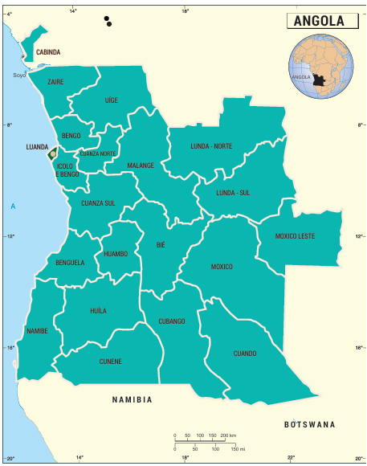
Figure 1- Angola's geographic location (Adapted from: Natural Earth Data and Angolan Banking Association)
January 2025
Angola is currently made up of 21 provinces, according to the political-administrative reorganisation approved by the National Assembly in August 2024 and in force since January 2025. The new provinces resulted from the division of the former provinces of Cuando Cubango, Moxico and Luanda, creating the provinces of Cuando, Cubango, Moxico Leste and Ícolo e Bengo.
The 21 provinces are: Bengo, Benguela, Bié, Cabinda, Cuando, Cubango, Cuanza Norte, Cuanza Sul, Cunene, Huambo, Huíla, Ícolo e Bengo, Luanda, Lunda Norte, Lunda Sul, Malanje, Moxico, Moxico Leste, Namibe, Uíge and Zaire. In administrative terms, Angola is subdivided into 326 municipalities and 378 communes, according to the most recent territorial reorganization. Luanda province, which houses the country's capital, remains the most populous, with approximately 6.9 million inhabitants, representing about 26.8% of the national population.
Figure 2 - Provinces of Angola
Angola is rich in natural resources, especially oil. Its topography includes three main regions: the coastal lowlands, the interior hills and mountains, and the eastern high plateau. These regions can be further divided into six physio-climatic zones, reflecting differences in climate (rainfall and temperature), altitude, and soils.
Angola's geographical position gives rise to significant climatic diversity, shaped by a combination of factors. These include its latitudinal and longitudinal extent, varied topography, and the influence of the Benguela Cold Current. As a result, Angola can be divided into three main climatic zones. In the north, the climate is hot and humid tropical. Moving progressively southwards, the climate becomes increasingly arid, culminating in a desert climate in the south-western region, near the border with Namibia. The central plateau enjoys a temperate tropical climate.
The country experiences two distinct seasons: a hot, humid season with higher rainfall, and a cooler, drier season. In general, precipitation levels are higher in the northern and inland areas, especially at higher altitudes. By contrast, coastal regions tend to be more arid or semi-arid due to the persistent cooling influence of the Benguela Current.
According to the Köppen climate classification (see Figure 1), Angola comprises the following main climate types:
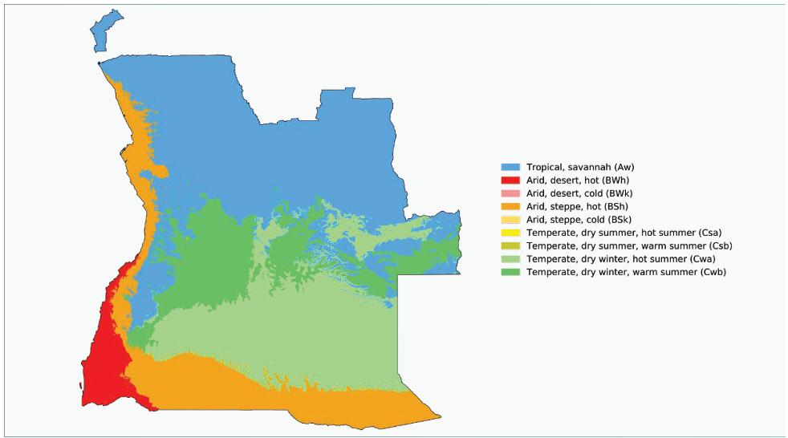
Figure 3 - Koppen-Geiger climate classification map for Angola (1980 - 2016) (Adapted from: https://koppen.earth/9)
This climatic variation determines the distribution of rainfall, water availability, agricultural suitability and different vulnerabilities to climate change, with a greater risk of prolonged droughts in the south and intense rainfall in the north.
The Intergovernmental Panel on Climate Change (IPCC) of the United Nations has defined four future climate scenarios, known as Representative Concentration Pathways (RCPs), which differ in their levels of radiative forcing and capacity to retain heat. These scenarios range from the most optimistic (RCP2.6) to the most pessimistic (RCP8.5), with intermediate pathways represented by RCP4.5 and RCP6.0. The main difference between the intermediate scenarios lies in the timing of radiative stabilization: before 2060 in RCP4.5 and around 2100 in RCP6.0[4].
Under the RCP4.5 scenario, climate projections for Angola indicate a rise in the average annual temperature between 1.2°C and 3.2°C by 2060. This warming is expected to result in hotter days and milder nights, along with a general increase in sea surface temperatures along the northern and southern boundaries of the Benguela Current's large marine ecosystem. Annual precipitation is projected to vary between a decrease of 27% and an increase of up to 20% by 2090. The likelihood of extreme weather events-such as heatwaves, droughts, and intense rainfall-is expected to increase. Additionally, greater urban soil impermeabilization will heighten the risk of flooding from high-intensity, localized rainfall events[11].
No significant changes are anticipated in wind patterns or ocean current directions. However, the pH of rainwater is expected to become more acidic, especially in urban areas, largely due to increased pollution from human activities rather than directly from climate change. Ocean acidification, driven by the absorption of atmospheric carbon dioxide (CO 2 ), will also continue, lowering the pH of the world's oceans.
A rise in the frequency and intensity of flooding along Angola's coastal areas is projected across all seasons, except during the winter months of June, July, and August, and will likely be interspersed with longer dry periods. Sea level rise is also anticipated, posing direct threats to Angola's coastal zonesnot only because these areas are home to much of the country's population and infrastructure, but also due to impacts on sensitive coastal ecosystems such as mangroves. Increased salinity may make it impossible for some plant species to survive, leading to changes in local flora and ecosystem dynamics.
| Projection | Condition | Trend |
|---|---|---|
| - Global average temperature likely to exceed +1.5°C by end of 21st century (vs. 1850-1900) | Increase | Air temperature |
| - Warming of Benguela Current may affect: • Planktonic system • Ichthyofauna • Commercial overfishing dynamics • Secular variations in marine dynamics | Slight increase or stability; effects uncertain | Sea water temperature |
| - Tropicalization of equatorial heating zone of Benguela Current by 2050 - Emergence of new phenomena (e.g., El Niño de Benguela) - Changes linked to secular dynamics, difficult to separate statistically from other global warming impacts | Stability; insufficient data to establish effects | Sea current temperature |
| - Decrease in average annual rainfall in south & north - Increase on central coast - Longer dry season (extending April-October) - Increase in maximum daily precipitation, more intense in coastal zones - Fewer but more intense precipitation events in south | Increase | Precipitation |
| Sea Level Rise (SLR) | - Sea level rise by 0.26m-0.77m by 2100 (67% confidence) - With global warming of 1.5-2.0°C: rise by 0.35m-0.93m | Slight increase or stability; effects uncertain |
| Wind direction - No drastic changes expected - Local urban corridors may affect wind patterns (linked more to urbanization than climate change) | Slight increase or stability; effects uncertain | |
| Direction of sea currents - No drastic directional changes expected - Possible vertical adjustments due to temperature changes | Slight increase stability; effects | or uncertain |
| pHdueto anthropic action - Linked to emissions from fossil fuels or potential sulfur mining | Increase | Rainwater |
| RainwaterpHby natural effects - No drastic changes predicted under natural conditions - Any acidification mainly due to anthropogenic action | Slight increase or stability; effects uncertain | |
| Occurrence and intensity of extreme events - Drought: increase in frequency & intensity (especially coastal areas) - Floods: increase in frequency & intensity, with longer drought periods - Heat waves: more frequent - Storm surges: more frequent - Wildfires: more frequent/intense | Increase | |
| Ocean acidification - Ocean absorbs CO 2 , leading to - Change in seawater chemistry due to CO uptake | increased acidity | 2 Increase |
Angola's vulnerability to climate change has become increasingly evident over time, marked by frequent extreme weather events such as droughts, floods, coastal degradation, and significant temperature fluctuations in certain regions-particularly along the coast, where the majority of the population is concentrated [10]. Policymakers and other key stakeholders are becoming progressively aware of the likelihood that these phenomena will intensify.
The growing signs of sensitive changes in biophysical systems, whether at regional and/or global scale, highlight the need to identify, analyse and assess the potential impacts of climate change in various socio-economic sectors, in order to plan a concerted response and mobilize adequate resources for its realization.
According to the results of Angola's General Population and Housing Census (RGPH 2014), the country's total population was recorded at 25.789.024 inhabitants (with an estimated 36.170.961 in 2025 [8]), distributed unevenly across the national territory. Approximately 63% of the population resides in urban areas, while 37% live in rural settings [5], with a significant concentration of around 6.9 million inhabitants in Luanda province.
Angola ranks among the countries with the lowest population densities in the world, with an average of 20.6 inhabitants per km², and vast areas with no population or fewer than 5 inhabitants per km².
Despite this, Angola continues to record one of the highest fertility rates in Africa, averaging 5.9 children per woman between 2010 and 2015 [10]. While the country's overall demographic density is low, it is highly uneven, with ever-expanding urban centres contrasting starkly with sparsely populated regions, particularly along the coastal provinces.
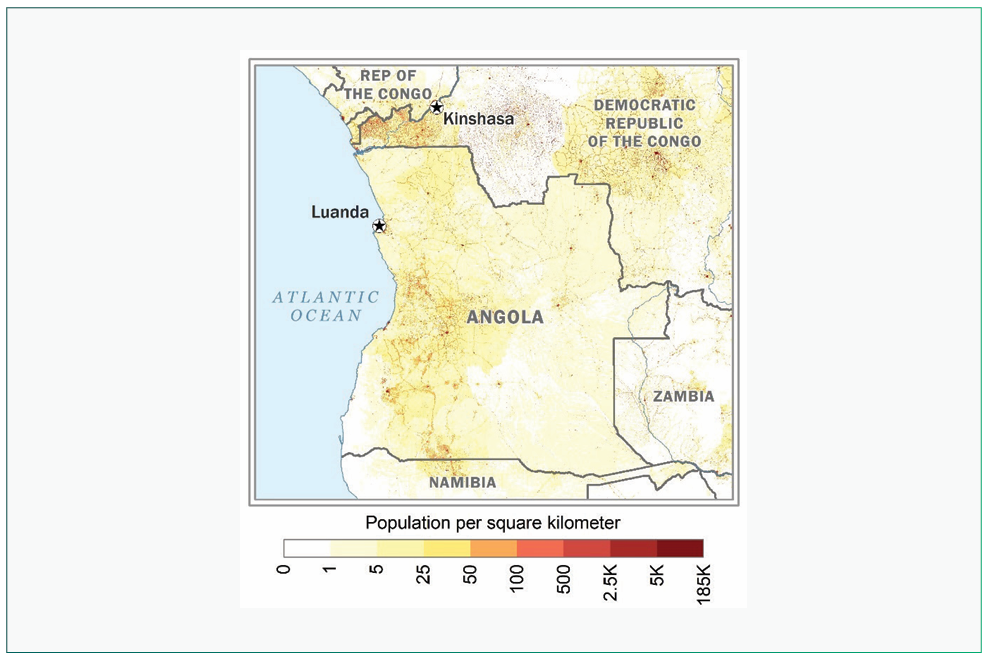
Figure 4 - Population distribution map[49]
According to the most recent data, the total fertility rate has slightly decreased to 5.4 children per woman, but remains one of the highest in sub-Saharan Africa. Early pregnancy is still prevalent, with 25.2% of adolescent girls (aged 15-19) having been pregnant or already having at least one child. This limits educational attainment and long-term socio-economic resilience for young women, particularly in rural areas [41] .
Population projections by the National Institute of Statistics for the period 2014-2050, based on births, mortality and migration rates (assuming an average natural population growth of 3%), suggest that Angola's total population will more than double, rising from approximately 36.2 million in 2025 to 67.9 million in 2050, as illustrated in the figure below (Figure 5). This projected demographic growth has been incorporated into emissions forecasts up to 2025 and 2030.
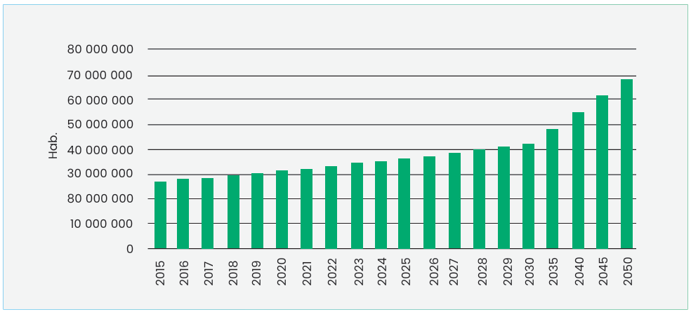
Figure 5 - Estimated population projections for the 2015-2030 period [15]
A key factor contributing to this population increase is the declining mortality rate observed in recent years, driven by improvements in life expectancy at birth, reductions in child mortality, and a lower prevalence of HIV among pregnant women (despite some provincial variation)[8].
According to the 2014 Census estimates, life expectancy at birth in Angola stands at 60.3 years (with 57.6 years for males and 63 years for females). Despite current challenges, the country has set a target of reaching a Human Development Index (HDI) above 0.70 by 2025.
Furthermore, Angola's population is characterised by a very youthful age structure, with a median age of 20.6 years. Approximately 65 per cent of the total population is under the age of 24, while only 2 per cent is aged 65 or over [10].
This demographic profile highlights not only a predominantly young population but also significant social vulnerabilities concentrated in children and adolescents. The challenges linked to nutrition, education, health, and access to essential services, are disproportionately experienced by younger age groups. These vulnerabilities are expected to intensify with climate change, increasing the urgency for child-sensitive approaches in climate adaptation and development planning.
One of the critical factors shaping Angola's development challenges is the persistence of profound socioeconomic disparities, particularly between urban and rural populations. Only 64.4% of the population has access to safe drinking water, with a significant difference between urban areas (84.9%) and rural communities (31.7%). Similarly, only 44.4% of the population has access to basic sanitation services nationally, dropping to just 19.5% in rural areas. Access to electricity also reflects this divide, reaching 81.8% of urban households but only 7.3% of rural ones. Furthermore, only 9.2% of rural households use clean cooking fuels, compared to 79% in urban areas[41].
These disparities exacerbate vulnerability to climate change, as rural populations - especially women and children - are more exposed to environmental risks while having less access to services and infrastructure that build resilience. Women represent 50.8% of Angola's population, and approximately 31% of households are headed by women, particularly in urban areas[41]. These households tend to be more economically vulnerable and have less access to social protection, making them more susceptible to climate-related shocks.
Nutrition and health indicators further highlight structural vulnerabilities. Chronic malnutrition (stunting) affects 39.9% of children under five, while 5.2% suffer from acute malnutrition (wasting). Access to early childhood education remains limited, with only 32.9% of children aged 3-5 years participating in organized learning activities. Overall, just 45.2% of children between 24 and 59 months achieve adequate development outcomes according to child development indicators[41]. These challenges are compounded by poverty, climate-related food insecurity, and lack of access to quality public services.
Angola is a multicultural and multilingual country. Portuguese, the sole official language, is spoken by 80% of the population as either a primary or secondary language. The six most widely spoken Bantu languages are: Umbundu (23%), Kikongo (8.2%), Kimbundu (7.8%), Chokwe (6.5%), Ngangela (3.1%), and Kwanyama (2.3%)[49].
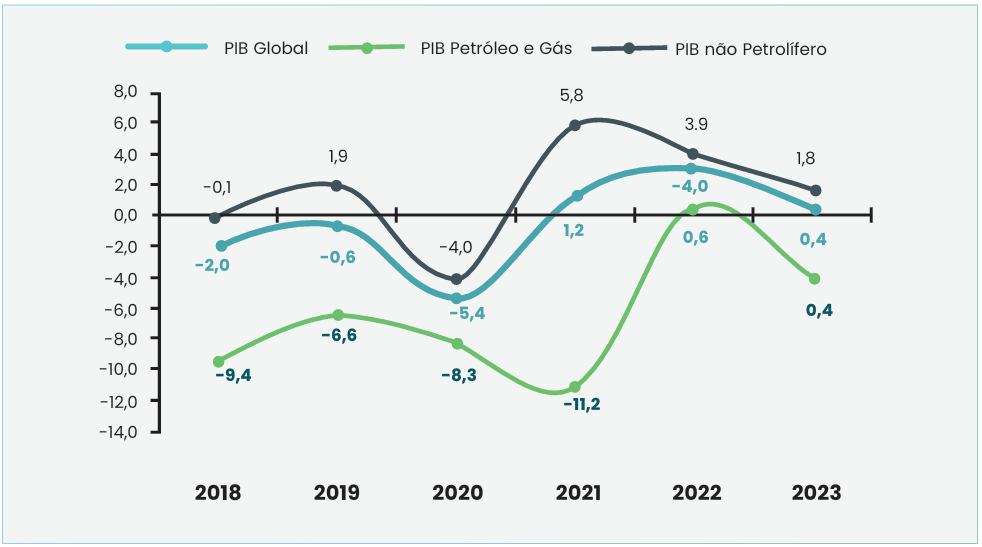
Figure 6 - Evolution of GDP growth rates between 2018 and 2023[18]
In 2020, Angola's Multidimensional Poverty Report[15], was developed, which considers four dimensions: i) Health; ii) Education; iii) Quality of life; and iv) Employment, along with sixteen indicators that capture the various deprivations faced by those living in poverty, which are crucial for understanding the reality of the country. According to this report, the incidence rate of multidimensional poverty in rural areas (87.8%) is more than double that in urban areas (35.0%).
Angola has an adult literacy rate of 66.03%, according to UNESCO (a decline of 1.38% since 2001). While the male literacy rate stands at 79.97%, the female rate is significantly lower at 53.41%, highlighting a notable gender disparity.
Primary education in Angola is both compulsory and free, covering six years of schooling (from the 1st to the 6th grade). Education in Angola has seen notable progress, with over 10 million students enrolled in general education during the 2022/2023 academic year, of which approximately 7.5 million are in primary education. Gender parity has improved, with girls now representing around 48% of primary school students. However, challenges remain: dropout rates exceed 10% in some grades, and repetition rates in primary education are around 15%, indicating difficulties in student retention and support. Furthermore, the shortage of qualified teachers remains a significant barrier, with a still considerable proportion of educators lacking appropriate pedagogical training. Moreover, school infrastructure is particularly vulnerable to climatic phenomena[21].
Additionally, significant gender disparities persist in literacy and access to technology. The adult literacy rate is 66.03%, but there is a considerable gender gap: while male literacy stands at 79.97%, female literacy is only 53.41%. Digital and financial inclusion remain limited for women, especially in rural areas, where access to the internet and formal financial services is scarce[41].
These demographic and social characteristics underscore the importance of integrating genderresponsive and child-sensitive approaches into Angola's climate strategies. Addressing these structural vulnerabilities is essential for ensuring that climate action contributes not only to emissions reduction and resilience building but also to social equity, human development, and the fulfilment of children's rights.
The incumbent President of Angola is João Lourenço, who was re-elected in the general elections on 24 August 2022.
The country is administratively divided into 21 provinces, according to the most recent politicaladministrative division. Each province is headed by a governor appointed by the central government and subdivided into municipalities, communes, neighbourhoods and villages.
Angola is a multi-party democracy with an Executive Presidency made up of the following organs of state: the President of the Republic, the National Assembly, the Government and the Courts 2 . The Angolan government is currently made up of 23 ministries.
Angola gained independence on 11 November 1975, following more than 500 years of Portuguese colonisation. Since the end of the civil war in 2002, the country has enjoyed relative political stability. The adoption of the 2010 Constitution marked a significant institutional shift, introducing a presidential-parliamentary system in which the President is no longer directly elected by popular vote but is instead the leader of the party that secures the largest number of seats in parliament. Despite notable progress in both political and economic spheres since the cessation of armed conflict, Angola continues to face considerable challenges. These include reducing its dependency on oil revenues, diversifying the economy, rehabilitating critical infrastructure, and strengthening the management of public finances. Equally important are efforts to enhance institutional capacity, improve human development indicators, and raise the overall living standards of the population.
According to the World Bank, Angola is classified as a lower middle-income country and is currently progressing towards upper middle-income status. The economic devastation caused by the prolonged civil war led to Angola's classification as a Least Developed Country (LDC) in 1994 [1] . However, in 2015, the United Nations Committee for Development Policy (CDP) determined that Angola had met the criteria for graduation from LDC status [7]. As of 2016, the country is no longer considered an LDC-an important milestone for the Angolan government, which views this graduation as a catalyst for accelerating national transformation and development [8].
Although graduation was initially scheduled for 2021, it has been postponed-first to 2024 and subsequently to 2027-due to the cumulative effects of external economic shocks and the COVID-19 pandemic [33]. Angola remains on the list of LDCs but is officially in a transitional phase towards graduation.
Angola's economic structure remains heavily dependent on oil, which accounts for a significant part of public revenues and exports. However, the government has made continuous efforts to promote the diversification of the economy. In 2024, there was an increase in the contribution of non-oil sectors to GDP, such as agriculture and manufacturing, which indicates gradual progress in this process. Economic diversification remains a central priority, especially with a focus on areas such as agriculture and industry, with the aim of reducing the country's vulnerability to fluctuating oil prices.
In 2024, the Angolan economy recorded a remarkable 4.4 % growth in Gross Domestic Product (GDP), the highest since 2014. This growth was driven by the recovery of the oil and mining sector, mainly through the extraction of oil and diamonds, in addition to the positive performance of nonoil sectors such as agriculture, fishing and commercial services [51]. However, economic progress is taking place in a context of inflationary pressure, with the inflation rate rising from 20.4 % in 2023 to 27.5 % in 2024, due to the increase in food prices and the adjustment in fuel prices, particularly diesel. In response, the National Bank of Angola (BNA) decided to increase the monetary policy interest rate to 19.5 % at the end of 2024, with the aim of controlling these inflationary pressures [51].
The labour market faces deep structural challenges, with high unemployment, especially among young people, and a large part of the working population employed in the informal sector, mainly in urban areas. According to estimates, the informal economy plays a significant role in the organisation of economic and social life but is not captured by official statistics. In addition, poverty continues to affect a considerable part of the population. In 2024, around 31.1 per cent of the population lived below the international poverty line (2.15 USD/day), which is equivalent to approximately 9.7 million people [51]. Despite some progress in wealth distribution, inequality remains high. The richest 20 % concentrate around 59 % of total income, while the poorest 20 % receive just 3 % [12] . The disparity is reflected in the Gini 3 index, estimated at 51.3 in 2018, highlighting economic and social inequality, especially between urban and rural areas.
To combat these inequalities, the Angolan government has implemented various social policies, such as the KWENDA programme, which offers a fixed monthly income of 8,500 kwanzas to vulnerable families, as well as encouraging them to take part in income-generating activities. The National Development Plan 2023-2027 is also developing strategies to reduce poverty, eliminate extreme poverty and promote equal opportunities, with minimum income policies and fairer tax and wage reforms aimed at ensuring a more equitable distribution of wealth and income[10].
Angola, the second largest oil producer in Africa, continues to depend significantly on this resource, but is implementing reforms to reduce this dependence. In 2024, oil production remained stable at around 1.1 million barrels per day, with forecasts of maintaining this level until at least 2027 [52]. The government has also been working to improve fiscal sustainability and public debt management, having signed an agreement with the China Development Bank in 2024, which ensures additional liquidity to support the debt and pay interest on international loans [22].
In addition, the government has pushed ahead with a programme of structural reforms, including phasing out fuel subsidies and encouraging economic diversification, with a particular focus on the agricultural sector and industry. Promoting a favourable business environment, with an emphasis on supporting foreign investment, is a key component of the government's strategy, with the aim of creating more inclusive and sustainable economic growth. These reforms are in line with the National Development Plan 2023-2027, which aims, among other things, to diversify the economy and improve agricultural infrastructure, promoting the development of non-oil sectors to ensure greater long-term economic stability[10].
In terms of human development, Angola is below the regional average. In 2022, the country recorded a Human Development Index (HDI) of 0.591, ranking 150th out of 193 countries[53]. This index reflects persistent challenges in the areas of health, education and income. The evolution of Angola's HDI and GDP per capita between 1990 and 2022 (Figure 7) shows that, until 2015, the growth in HDI accompanied the increase in GDP, which indicated improvements associated with the economic cycle. However, after the fall in GDP per capita in 2015, the HDI remained relatively stable, which indicates resilience in social progress, although the challenges in converting economic growth into sustainable human development are still substantial.
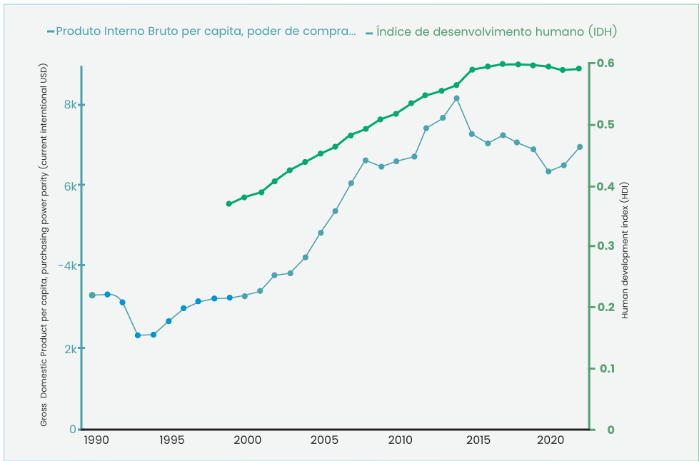
Figure 7 - Gross Domestic Product (GDP) per capita and Human Development Index (HDI)[53]
Angola remains one of the main oil producers in Africa, with an average production of around 1.1 million barrels per day in 2024. This level of production has remained stable even after the country left the Organisation of Petroleum Exporting Countries (OPEC) in January 2024, a decision aimed at providing greater flexibility in the management of its national production[52]. Moreover, the Angolan government plans to maintain this level of production until at least 2027.
In 2024, Angola exported around 393.4 million barrels of crude oil, generating revenues of around $31.4 billion at an average price$79.7 per barrel[54].The oil industry continues to account for around 50 % of the country's gross domestic product (GDP) and more than 80 % of government revenues and 90 % of national exports [51].
In addition to oil, Angola has a wide range of mineral resources, including diamonds, iron, phosphates, copper, gold and manganese, many of which remain unexplored. To promote the exploration and mapping of these resources, the government has implemented the National Geological Plan (PLANAGEO), with the aim of increasing geological knowledge of the territory and attracting investment (Presidential Decree No. 282/20).
In the natural gas sector, compared to Nigeria and Mozambique, Angola has few natural gas reserves, estimated at 5.1 trillion cubic feet (TCF)[19]. In addition, the Natural Gas Master Plan (PDG) establishes a development roadmap for the sector, forecasting an increase in the share of natural gas in the energy matrix from 15% to 25% by 2025, with a focus on promoting the domestic use and sustainable export of the resource[20].
Economic diversification remains a strategic priority for Angola, with the strengthening of the extractive industry playing an essential role in reducing dependence on oil and promoting more sustainable and inclusive economic growth in the long term[51].
In addition to fossil fuels and mineral resources, Angola's energy landscape also heavily relies on biomass, particularly charcoal and firewood, for domestic energy consumption. According to the UNFCCC Biennial Update Report and FAO data, biomass accounts for more than 60% of household energy consumption, especially in rural and peri-urban areas[29].
Women and girls are directly involved in the production and sale of charcoal, which serves both as a critical source of livelihood and a driver of deforestation and land degradation. Agriculture and Fisheries
Angola's agricultural sector is dominated by family farming, which accounts for around 91.5% of farms[55]. Angolan agriculture has great potential, with around 35 million hectares of arable land, of which only 17 % is currently cultivated. Although the sector employs a large share of the population, it contributes only around 5.6 per cent to the gross domestic product (GDP)[46]. Agriculture in Angola remains predominantly subsistence-based, with staple crops such as maize, cassava, beans, and sweet potatoes being the most commonly cultivated.
In recent years, the Angolan government has invested in projects to increase agricultural productivity[51]. Between 2015 and 2024, a World Bank-supported project helped increase the productivity and commercialisation of 2.5 million farmers, 37 % of whom are women. This project contributed to a 19 % increase in crop productivity and a 52% increase in livestock productivity, with a 96 % increase in income[56].
As shown by the data displayed above, women play a critical role in Angola's agricultural sector, particularly in subsistence farming and post-harvest activities. Their involvement is fundamental not only for local food security but also for the economic resilience of households. Women are often responsible for seed selection, planting, harvesting, processing, storage, and the marketing of agricultural products, especially in rural areas where formal market access is limited[40].
The fishing sector is the third most important in the country after the oil and diamond industries. Angola's coastline is 1,650 kilometres long, with two divergent currents (Angola and Benguela) that create a strong upwelling system that supports a high primary production of marine resources. However, overfishing and changes in hydroclimatic conditions have greatly reduced fishing potential[50]. This location provides highly productive ocean conditions, making marine fisheries responsible for more than 70 % of the country's total fish production. The main species caught include horse mackerel, sardines, tuna and various demersal species[57].
Artisanal fishing plays a significant role in the Angolan economy, especially in the provinces of Benguela and Luanda, which concentrate most of the artisanal fishing communities[50]. The Institute for the Development of Artisanal Fishing and Aquaculture (IPA) has been fundamental in the support and development of artisanal fishing in Angola. Created by Decree 45/05 of 8 July, the IPA is a public entity with administrative and financial autonomy, responsible for promoting, organising and carrying out social campaigns aimed at creating and developing artisanal fishing communities and aquaculture[23].
In 2020, artisanal maritime fishing in Angola registered a total of 47,097 workers, of which 30,123 (64%) were fishermen and 16,974 (36%) were involved in support activities, such as fish processing and marketing[24].
Women and girls are central to the fisheries value chain, particularly in activities such as fish drying, processing, and marketing. These activities are crucial not only for maintaining household income but also for ensuring local food availability in coastal and peri-urban areas. Recognising their role is vital to building a sustainable and inclusive blue economy.
Despite progress, the sector faces challenges such as illegal, unreported and unregulated (IUU) fishing, which results in significant losses for the economy, representing losses of millions of kwanzas per month for the Angolan state, jeopardising public revenues and the sustainability of the sector. The Angolan government has been investing in the modernisation of the fishing industry, including the construction and rehabilitation of fishing ports and the modernisation of research laboratories. These initiatives aim to strengthen the sector's value chain, improve food security and promote the sustainability of marine resources.
Angola's energy matrix continues to be dominated by two main sources: hydroelectricity and thermal generation from fossil fuels such as diesel and fuel oil. In 2023, total electricity production reached 15,768 GWh, with 84.6 % coming from hydroelectric plants, demonstrating the country's strong dependence on this renewable source[25].
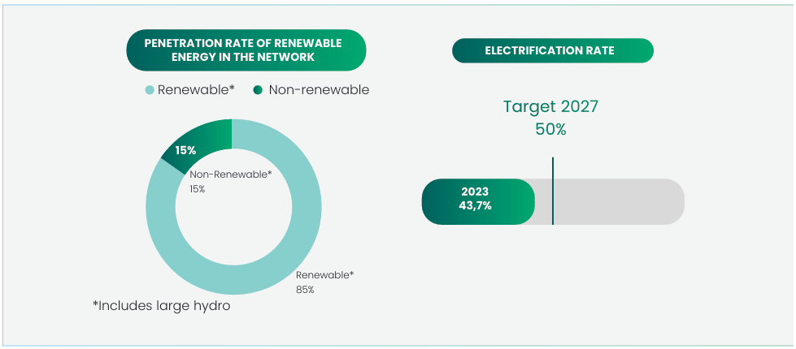
Figure 8 -Grid penetration rate of Renewable Energies and electrification rate (adapted from ALER MARKET OUTLOOK ANGOLA 2024)[25]
Despite the growth in installed capacity, the rate of access to electricity remains a challenge. In 2023, around 44 per cent of the Angolan population had access to electricity, with most rural areas still relying on traditional sources such as firewood and charcoal for cooking and heating.
With the aim of reversing this scenario, the Angolan government has developed the "Angola Energia 2025" plan, which sets the target of reaching an installed capacity of 9,000 MW by 2027, 72 per cent of which should come from renewable sources, namely solar and hydroelectric power. The plan also provides for the electrification of 60% of the country's territory, with priority given to the expansion of distribution networks and the implementation of decentralised solutions in the most remote areas[58]. While these targets are ambitious and necessary, it is important to acknowledge that not all planned measures have yet been implemented, and the strategy remains in progress.
The national electricity grid is made up of three main systems - North, Centre and South - structured around the country's main river basins. There are also isolated systems responsible for supplying some provincial centres not covered by the interconnected systems. The interconnection of these systems and the modernisation of energy transport infrastructures are strategic priorities, with a view to ensuring greater reliability and efficiency in distribution[59].
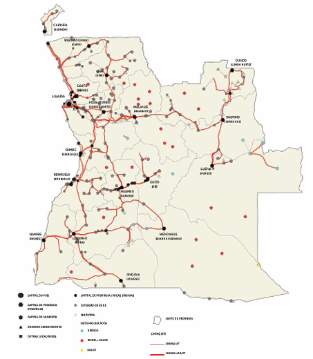
Figure 9- Angola's Power Grid Expansion Model[59]
In addition to integrating isolated systems into interconnected systems, the plan includes the modernisation of existing networks and the use of decentralised solutions, such as mini-grids and solar photovoltaic systems, which are particularly suitable for areas with low population density.
The persistent use of biomass in rural areas continues to raise environmental concerns, particularly in terms of deforestation on the outskirts of villages and small towns. Charcoal, used mainly in urban areas, is often produced unsustainably, without replacing the trees that are felled[14].
Road transport infrastructure is a cornerstone of Angola's economic growth, providing vital connections across the national territory and serving as the primary mode for the movement of people and goods. Given the country's vast geographical expanse and the dispersed nature of its population centres, the road network is essential for facilitating domestic trade, improving access to basic services, and fostering regional integration. In recent years, significant investments have been made to rehabilitate and expand key road corridors, aligning with national development goals and regional connectivity initiatives.
Angola's road network comprises an estimated 76,000 kilometres of roads, with approximately 20,000 kilometres paved (around 26% of the total network). The network is organised into three main categories: primary roads, linking provincial capitals and connecting Angola to neighbouring countries; secondary roads, facilitating intermunicipal connections; and tertiary roads, serving local and rural communities (Figure 10). The country's road system is structured around three main international corridors: the Luanda corridor, connecting the capital with the interior; the Lobito corridor, linking the central region to Zambia and the Democratic Republic of Congo; and the Namibe corridor, providing access from the southern coast towards the hinterland and neighbouring Namibia[26].
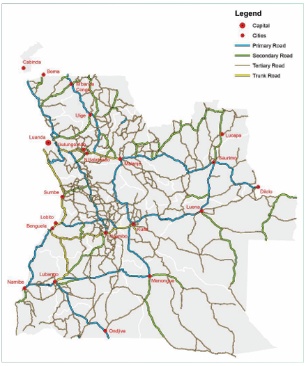
Figure 10 - Angola's Road Network[17]
Despite progress in rehabilitating main routes, Angola's road infrastructure continues to face challenges, including poor road conditions in many secondary and tertiary networks, limited maintenance capacity, and vulnerability to seasonal disruptions. Improving road infrastructure remains a national priority to enhance economic competitiveness, reduce transport costs, and promote social inclusion by improving access to markets, education, and healthcare in remote areas. Continued investment in road maintenance, expansion, and institutional capacity is critical to ensuring the sustainability and resilience of Angola's transport system.
Railway infrastructure plays a strategic role in Angola's economic development and territorial integration, providing essential links between the country's seaports and inland regions, while facilitating regional trade with neighbouring countries. The Angolan railway sector, which has benefited from significant investments over the past decade, serves as a critical pillar for improving the mobility of people and goods, strengthening national connectivity, and positioning Angola as a logistical hub in Southern Africa.
Angola currently operates three main railway systems, covering a combined length of approximately 2,700 kilometres, all extending from Atlantic ports into the country's interior. The Luanda Railway (CFL) connects the capital city to Malanje Province over a distance of around 500 kilometres, including a logistical branch from Zenza to Dondo. The Benguela Railway (CFB), the longest at 1,344 kilometres, links the Port of Lobito to the border town of Luau, forming a key component of the Lobito Corridor, with strategic potential for transporting minerals from the Democratic Republic of Congo and Zambia. The Moçâmedes Railway (CFM), spanning 856 kilometres, connects the Port of Namibe to Cuando Cubango Province, playing an important role in transporting iron ore from Cassinga for export[26].
Despite the rehabilitation efforts completed over the past decade, the railway sector continues to face challenges related to financial sustainability and low traffic volumes. The three lines operate independently, without internal interconnections, limiting the integration of the national network. Nonetheless, the Angolan government remains committed to enhancing railway infrastructure, recognising its potential to boost economic competitiveness, facilitate cross-border trade, and promote sustainable regional development.
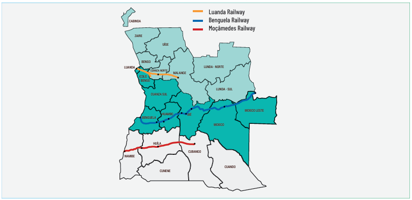
Figure 11- Rail Transport in Angola [26]
Maritime transport is a critical element of Angola's international trade, with the country's long Atlantic coastline providing strategic access for import and export activities. The ports of Angola are key gateways for trade with global markets, handling a significant volume of the country's exports, including oil, minerals, and agricultural products. The Port of Luanda, the largest and busiest port, serves as the main entry point for imports and the primary export hub for oil and other commodities. Other notable ports include Porto do Lobito, Porto do Namibe, Porto de Cabinda, and Porto de Soyo, which serve regional and international trade, particularly for oil and gas exports (Figure 12)[26].
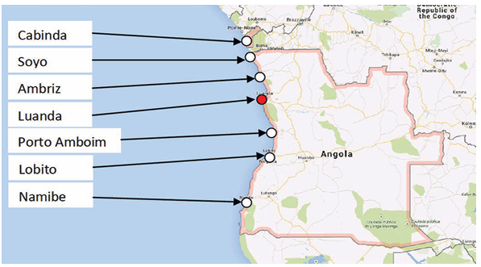
Figure 12 - Location of Angola's main ports[17]
There is also a river network made up of large rivers with several falls, rapids and lakes, some of which are navigable for dozens of kilometres and are also suitable for bathing and water sports. Some of these rivers are the Kwanza, Zaire, Kuando and Cunene. Angola's rivers offer excellent transport opportunities, both for tourism and for a mix of commerce and tourism.
Angola is undertaking substantial efforts to modernise and expand its port infrastructure, with the goal of increasing capacity, improving efficiency, and promoting economic diversification. The development of deep-water ports, along with the upgrading of transport links from ports to inland regions, is essential for boosting the country's competitiveness in global shipping and trade.
Air transport in Angola primarily caters to passenger traffic, both international and domestic. The country boasts a network of airports and aerodromes distributed across its territory, enabling quick access to all national regions, as well as connections to other countries. The Quatro de Fevereiro International Airport in Luanda, the main international gateway, handles some of the heaviest air traffic in Africa, positioning it as a key hub for global connections.
The national flag carrier, TAAG Angola Airlines, operates flights to major destinations across Africa, Europe, and South America, facilitating both passenger and cargo transportation. The expansion and modernisation of Angola's air transport infrastructure are central to enhancing connectivity, supporting tourism, and bolstering the country's trade links. Airports such as Catumbela International Airport and Cabinda Airport are also critical for regional connectivity, serving domestic and international routes[26].
Angola's service sector continues to play a central role in the economy, accounting for approximately 41.6% of GDP and employing around 38% of the labour force[48]. This sector covers areas such as banking, telecommunications, commerce, tourism and hotels, and has benefited from economic reforms and investment in infrastructure, contributing to the diversification of the economy beyond oil.
Tourism in Angola has shown signs of growth, with a 9.2% increase in hotel occupancy rates recorded between January and July 2024[60]. Despite this progress, the sector continues to face significant challenges, notably the shortage of hotels and other types of accommodation[48]. In 2023, revenue generated from international visitors was estimated at 11.9 billion kwanzas, with projections indicating continued growth in the coming years[27].
The construction sector has maintained steady growth, driven by reconstruction programmes and infrastructure development initiatives. In 2023, construction accounted for approximately 9% of GDP[48], with the market valued at an estimated USD 7 billion and a projected compound annual growth rate of over 5% between 2025 and 2028 [61]. This growth reflects the government's commitment to improving infrastructure and fostering sustainable economic development.
The latest IPCC report, the Sixth Assessment Report (AR6) 4 , published in 2021, reiterates the urgent need for global climate action. It emphasises that the 1.5°C and 2°C global warming limits are becoming increasingly difficult to achieve unless there is an immediate and drastic reduction in greenhouse gas emissions. It states that, to limit global warming to 1.5°C, net global carbon dioxide emissions must reach zero by 2050 and global GHG emissions must fall by 45% by 2030 compared to 2010 levels.
The 2023 report builds on this, stating that with current policies and actions, the world is on course for a 3.2°C temperature increase by 2100. This would have devastating impacts on ecosystems and societies, particularly in developing countries such as Angola. These warnings reinforce the urgent need for climate action and commitment to ensure that the global temperature does not exceed 1.5°C, as set out in the Paris Agreement.
In this context, it is important to highlight the connection between climate mitigation efforts and youth engagement. The transition to a low-carbon economy will require building capacities and developing skills among young people, particularly in areas such as renewable energy, sustainable agriculture, circular economy, and green innovation. Fostering youth participation and preparing the next generation for green jobs is therefore a key element to consider in the broader strategy of aligning climate objectives with sustainable economic development. This will be essential to ensuring that Angola can pursue emissions reduction while promoting inclusive growth in the years ahead.
Angola, in line with the global targets and requirements of the Paris Agreement, presents its revised Nationally Determined Contribution (NDC), reflecting its ongoing commitment to contribute to limiting global warming. The country is committed to achieving the objectives of Article 2 of the United Nations Framework Convention on Climate Change, which aims to stabilise greenhouse gas concentrations in the atmosphere at a level that prevents dangerous anthropogenic interference with the climate system.
Angola's mitigation contribution is based on a reduction in GHG emissions in relation to a 2020 greenhouse gas emissions baseline (BAU), but now for the period 2020-2035, with a target of reducing emissions by 11 % by 2035 (conditional contribution). Although the targets for the period from 2020 to 2030 are no more ambitious than those of the previous NDC, they have been set to reflect the most realistic and feasible conditions for Angola. While the reduction in emissions is less aggressive, the targets aim to ensure effective and sustainable implementation that takes the country's capacities into account.
The shift from a 2015 baseline to a 2020 baseline is due to the fact that 2020 is the most recent year for which Angola has officially reported greenhouse gas (GHG) emissions data in its Biennial Update Report (BUR). This ensures greater consistency between the NDCs and the national inventory, in line with the Enhanced Transparency Framework of the Paris Agreement. The 2020 inventory benefits from improved data quality, updated methodologies and stronger MRV systems, enabling more reliable emissions estimates. From a strategic perspective, it is better aligned with national planning instruments and the global climate ambition cycle.
The contribution consists of two components:
Therefore, the combined unconditional and conditional contributions equate to a 11 % reduction in greenhouse gas (GHG) emissions compared to the business as usual (BAU) scenario in 2035. This is equivalent to an estimated mitigation level of up to 49.3 million tCO 2 e in 2035.
While the percentage targets are less ambitious than those in the previous NDC, they correspond to a greater absolute reduction in GHG emissions, reflecting updates to the inventory and reference scenario.
In accordance with Article 4, of the Paris Agreement, each successive Nationally Determined Contribution (NDC) is expected to represent a progression beyond the previous one and reflect the highest possible ambition. However, the level of ambition must also take into account national circumstances, capabilities and the need for sustainable development, particularly in developing countries such as Angola.
Angola remains deeply committed to the objectives of the Paris Agreement and to contributing to the global effort to limit temperature rise to well below 2°C, and preferably to 1.5°C. In revising its NDC, Angola has sought to align its climate commitments with national development priorities, institutional capacity and current implementation realities.
Despite strong political will and policy frameworks, the previous NDC saw a very limited number of its proposed projects reach full implementation. This was largely due to challenges related to technical capacity, coordination mechanisms, and the availability of financial and technological support. These experiences have informed the approach taken in this NDC revision.
The updated NDC therefore prioritises realism and implementability, favouring a focused set of actions with higher potential for execution over the 2025-2035 period. The current contribution presents a smaller portfolio of projects, selected based on their feasibility and alignment with existing institutional capacities. This strategic shift aims to ensure that Angola's climate commitments are not only credible, but actionable.
While the percentage reduction targets - 5% unconditionally and 11% conditionally by 2035 -may appear less ambitious than those outlined in the previous NDC, they correspond to a greater absolute reduction in greenhouse gas emissions. This is due to improved national inventories and a revised reference scenario based on 2020 data, which benefits from more robust methodologies and enhanced transparency mechanisms.
In this context, the ambition of Angola's NDC lies not only in the quantitative targets it sets, but in its deliberate focus on achievability, institutional strengthening, and strategic prioritisation of interventions that are more likely to result in measurable climate benefits. This approach reflects
Angola's commitment to continuous progress and lays a more solid foundation for scaling up ambition in future NDC cycles, in line with national development and the evolving global climate agenda.
The sources of information relevant to the mitigation component of this NDC include relevant national and sectoral plans and strategies:
The GHG inventory developed and published in the BUR considered the following main thematic areas:
Energy The energy sector is fundamental to Angola's economic and social development, enabling improvements in the quality of life of the population.
Production of renewable electricity is increasing and is expected to continue growing due to private investment, government strategies and guidelines. Hydro, solar and wind power are perhaps the most recognised low-carbon technologies and are central to a decarbonised energy system. One of the challenges of decarbonising the energy sector is reducing greenhouse gas emissions sufficiently while ensuring the reliability, security and affordability of energy.
Decarbonisation will likely depend on increasing electrification in other sectors. Therefore, as it decarbonises, the power sector may need to increase capacity or improve efficiency. This will happen alongside other changes in the sector, including increasingly complex supply and demand networks, new demands for bi-directional energy flow, new business models for energy production and network infrastructure development, and the increasing digitalisation of energy technology.
Transport A country's economic and social development is inextricably linked to the growth of its transport networks. Growth forecasts for the country in the coming years, in terms of both population and economic growth, have implications for transport-related emissions, which result in an increase in global temperature and climate change.
Industry Bearing in mind the strategic objective of diversifying the economy, which the Angolan government intends to push forward in the coming years - both as a response to the oil crisis and in the context of the country's graduation as a Least Developed Country (LDC) the development of new industrial sectors is expected, particularly the manufacturing industry, whose expansion is anticipated in the short term. Within this framework, the government recognises that the growth of economic activity must be based on conscious, efficient, and environmentally sustainable energy consumption.
Direct greenhouse gas (GHG) emissions from the industrial sector result from multiple processes, such as the in situ combustion of fossil fuels to produce heat and energy, the non-energy use of these fuels, and specific chemical reactions, such as those associated with cement production. In addition to these, there are indirect emissions associated with the consumption of centrally produced electricity.
With the aim of promoting a more energy and environmentally efficient national industry, the government intends to encourage the progressive replacement of diesel generators with natural gas cogeneration systems, capable of simultaneously producing electricity and heat for industrial use.
From the point of view of energy security, the decentralised production of electricity for selfconsumption through cogeneration offers a more reliable solution, mitigating supply failures and instabilities in the national electricity grid, as well as preventing damage to industrial equipment.
There is also the added benefit of using an abundant and locally produced fuel. On the other hand, utilising waste heat in the industrial process contributes to greater overall energy efficiency. Environmentally, replacing diesel with natural gas represents a significant measure for reducing GHG emissions in the industrial sector[11].
Agriculture, forestry and other land uses According to the 'Guidelines for Defining a Strategy for Exiting the Crisis Derived from the Fall in Oil Prices on the International Market'[9], agriculture is identified as a key sector for reducing dependence on oil and diversifying the economy.
Angola has favourable natural conditions for agriculture and forestry, with significant production potential across the country. The sector already accounts for a significant proportion of GDP (9.9 %in 2015) and employment.
The government aims to strengthen food self-sufficiency and increase exports, and strong growth is expected in the agricultural sector. To ensure the sustainability of this growth, it is essential to promote sustainable agricultural practices from economic, environmental, and energy perspectives. In addition to their socio-economic value, forests play a crucial role in mitigating climate change by acting as important carbon sinks. The sustainable management of forests is vital to conserving this resource and ensuring the environmental and economic benefits it provides.
Despite their resilience, loss of vegetation cover can exacerbate the effects of climate change. Therefore, the government is committed to implementing mitigation measures in the forestry sector to preserve this natural heritage and guarantee its contribution to the country's climate objectives.
Waste Given its direct relationship with economic growth, urbanisation and increased consumption, waste management is one of the most complex challenges facing modern societies. If waste is not disposed of properly in controlled landfill sites, it poses serious risks to public health and the environment. In particular, it can contaminate surface and groundwater, rendering it unfit for human consumption.
In Angola, demographic growth, industrial development, and accelerated urbanisation will continue to increase waste production. Against this backdrop, the 2012 Strategic Plan for Urban Waste Management (PESGRU) establishes a structured approach to urban solid waste management[3].
Developing the waste sector has significant potential to reduce environmental and health impacts, create jobs, add value to by-products, and promote people's well-being. If well structured, it is a sector with high economic and environmental value.
Furthermore, the proper management of municipal waste can play a significant role in mitigating greenhouse gas emissions. Capturing and using the methane generated in landfills to produce electricity offers dual benefits: it improves hygiene and public health conditions in urban areas, while also contributing to reducing greenhouse gas emissions and strengthening energy security by decentralising electricity production.
In its previous NDC (NDC 2.0), Angola adopted 2015 as the base year when formulating its greenhouse gas (GHG) emission mitigation targets. However, for this NDC, Angola has chosen to update the base year to 2020 based on criteria relating to technical, methodological and institutional coherence.
The choice of 2020 is primarily due to the fact that it is the latest year for which Angola officially reported greenhouse gas emissions data in its Biennial Update Report (BUR). This update ensures consistency between the NDC targets and the most recent data available in the national emissions inventory, in line with the good practices recommended by the Paris Agreement's Enhanced Transparency Framework [30]. The ETF Reference Manual, published by the UNFCCC in 2023, indicates that countries should, wherever possible, base themselves on reference years with robust data that have already been submitted to the UNFCCC[30].
In addition to institutional coherence, the change is based on a substantial improvement in the quality and coverage of available data. The 2020 inventory reflects significant technical advances in the collection and analysis of sectoral data, the application of more recent IPCC methodologies, and the strengthening of national monitoring, reporting and verification (MRV) capacities. These improvements make emissions estimates more reliable and enable reduction targets to be formulated that are better substantiated from a technical point of view.
Politically and strategically, 2020 also represents a more recent starting point, in line with the international cycle of climate ambition and the results of the first Global Stocktake, finalised in 2023. Defining this new base year also ensures greater alignment between Angola's climate commitments and its national planning instruments, including the ongoing sectoral mitigation and adaptation strategies.
The base year considered for the NDC is 2020, which is the latest data from Angola's GHG inventory that was finalised in November 2024, with the publication of Angola's first biennial update report to the United Nations Framework Convention on Climate Change. Angola's total greenhouse gas emissions are 211.528 ktCO2e[29].
Angola's Biennial Update Report (BUR) presents the national inventory of GHG emissions and removals. This inventory was drawn up on the basis of the 2006 IPCC Guidelines, using methods compatible with the country's institutional capacity and data availability[2]. This text summarises the methodology applied; more detailed information can be found in the BUR submitted to the UNFCCC[29].
The methodology adopted was based on the IPCC Tier 1 method, combining activity data with standard emission factors. As Angola does not yet have national emission factors, the BUR uses reference values provided by the IPCC. The inventory was structured by sector using an integrated approach, with technical participation from national institutions and support from international experts, including training processes and methodological review.
The GHG Inventory follows the 2006 IPCC Guidelines on National Greenhouse Gas Inventories and emissions include CO2, CH4 and N2O and the Global Warming Potential (GWP) values used are those determined by the IPCC for the IPCC Second Assessment Report.
| Gases | GWP |
| CO 2 | 1 |
| CH 4 | 21 |
| N 2 O | 310 |
In the energy sector , the estimation of emissions was based on the application of two complementary approaches: the bottomup approach, which takes into account final energy consumption data by category (transport, industry, residential, among others), and the top-down approach, which uses aggregated national energy supply data (production, imports, exports and stock changes). The formula applied follows the model:
Sources included combustion of oil derivatives, biomass (wood and charcoal), liquefied petroleum gas (LPG), and fugitive emissions from the oil sector. The gases considered were carbon dioxide (CO2 ), methane (CH 4 ) and nitrous oxide (N 2 O), with CO 2 being the main component.
For industrial processes and product use (IPPU), estimated emissions mainly refer to the production of cement, glass, lime, ceramics and metal alloys. These estimates are based on annual production volumes provided by relevant industrial entities. The main source of emissions in this sector is CO 2 , which results from the chemical and thermal processes involved in manufacturing materials. The standard IPCC emission factors are used.
In the agricultural sector , which is part of the AFOLU (Agriculture, Forestry and Other Land Use) category, emissions from ruminant enteric fermentation, manure management, the burning of agricultural waste, rice cultivation and the application of fertilisers and agricultural correctives such as urea and lime. The methodology involved quantifying the animal population, cultivated areas and management practices, with the main gases involved being CH 4 and N 2 O. The calculations followed the parameters defined by the IPCC, adjusted to the national reality using the best statistical information available.
With regard to land use, land use change and forests (LULUCF), a combination of the three approaches proposed by the IPCC for representing land occupation was adopted:
Satellite images (Landsat), geospatial data and field sampling were used to calculate CO 2 emissions and removals associated with forest conversion, agricultural expansion and reforestation. The LULUCF sector proved to be critical for carbon removal estimates, especially in areas with high forest sequestration potential.
In the waste sector , the applied methodology was based on the IPCC models for the disposal of municipal solid waste disposal, waste burning and incineration, and the treatment of domestic and industrial wastewater treatment. Emissions of CH 4 from the anaerobic decomposition of organic waste in landfills, N 2 O in wastewater treatment processes and CO 2 from the incineration of nonbiogenic fractions were estimated. The calculations took into account the per capita generation of waste, its gravimetric composition and the coverage of sanitation services. Where data was unavailable, estimates based on standard parameters were used.
Significant challenges have been encountered in drawing up the inventory, including the scarcity of up-to-date data in various sectors, the absence of a legal system obliging the reporting of climate information, and limited technical training. In response, Angola has strengthened its National Monitoring, Reporting and Verification (MRV) System with the aim of formalising inventory processes, improving data quality, and enhancing transparency in fulfilling climate commitments under the UNFCCC and the Paris Agreement.
Complete tables describing the categories included in Angola's GHG inventory by sector are available in Annex a. of this report.
As mentioned above, this NDC adopts 2020 as the base year, replacing the previous NDC's base year of 2015. This update is justified by the availability of more recent, robust and complete data within the scope of the national greenhouse gas emissions inventory.
According to the national inventory presented in the BUR, total greenhouse gas (GHG) emissions in Angola were estimated at 211,527.88 ktCO 2 e in 2020[29]. Table 6 shows the breakdown of emissions by sector, based on IPCC categories. The sectoral analysis reveals that the Land Use and Land Use Change (LULUCF) sector is by far the main contributor to emissions, accounting for 84 % of the total - more than 178,000 ktCO 2 e. The energy (10%), agriculture (2%), waste (2%) and industrial processes (1%) sectors contribute significantly less, although they are also relevant for defining mitigation policies.
| Source of GHGemissions (2020) | Emissions de ktCO 2 e | |
|---|---|---|
| Total | % | |
| Energy | 21.904, 66 | 10% |
| Agriculture | 5.215,73 | 2% |
| Waste | 3980,70 | 2% |
| Industrial Processes | 2.253, 02 | 1% |
| Land Use and Land Use Change | 178.173, 775 | 84% |
| Total | 211.527,88 | 100% |
To illustrate the discrepancy between the two base years, and to allow a better understanding of the methodological and data evolution, the following is a comparison between the estimated emissions for 2015 and 2020 (Figure 13).
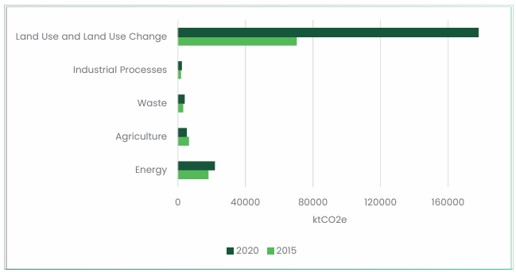
Figure 13 - GHG emissions in 2015 and 2020
The comparison between 2015 and 2020 reveals a significant increase in total GHG emissions, particularly in the Land Use and Land Use Change (LULUCF) sector, which in 2020 represents the vast majority of the country's total emissions.
This increase is not exclusively due to greater pressure on natural resources, but is strongly related to methodological changes introduced in the inventory process presented in the BUR. In particular, the use of new emission factors, improved activity data and the use of more recent and accurate satellite images have allowed for a more comprehensive and accurate estimate of real emissions. Although the 2020 figures show a sharp increase compared to 2015, they are believed to be more realistic and representative of the current reality of emissions in Angola. For this reason, the base year for emission projections was adjusted to ensure greater accuracy and realism.
Per capita greenhouse gas emissions are measured in tonnes of carbon dioxide equivalent (CO2e) per person per year. This metric converts all greenhouse gases into CO2e based on their respective global warming potential value over a 100-year period 5 .
In 2020, Angola's average emissions were 6.78 tCO2e per person, reflecting the average 'carbon footprint', measured in tonnes of carbon dioxide equivalents per year. These per capita emissions were calculated using the 2020 population estimate of 31,194,857 inhabitants.
BAU refers to a scenario that assumes that no mitigation policies or measures will be implemented beyond those that are already in place and/or that are legislated or planned to be adopted, i.e. the level of emissions that would take place without further policy efforts.
The projections were calculated using GACMO - The Greenhouse Gas Abatement Cost Model (GACMO), developed by the UNEP DTU Partnership. The BAU scenario was constructed on the basis of the 2020 National GHG Inventory (base year), in accordance with IPCC guidelines.
Mitigation measures were selected and prioritised on the basis of consultations with stakeholders, which formed the basis for calculating the mitigation scenario, calculated using the GACMO model. According to the BAU reference scenario projections, and in the absence of mitigation measures, greenhouse gas (GHG) emissions in Angola are expected to continue to increase over the next decade. However, it is estimated that the implementation of the actions set out in the current Nationally Determined Contribution (NDC) will allow a reduction of approximately 49.3 million tCO 2 e by 2035, which is around 21 % below the emissions projected in the BAU scenario for that same year (Figure 14).
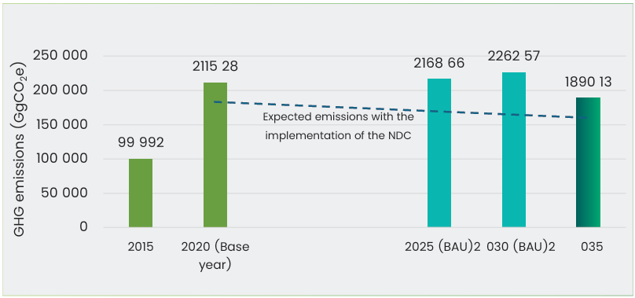
Figure 14 -Ambition for Angola's NDC 6
In this NDC, Angola sets itself the goal of achieving this 5 % reduction in emissions by 2035, unconditionally. In addition, it is hoped that, through a conditional mitigation scenario, the country will be able to reduce 11% below BAU emission levels by 2035.
To achieve this, various measures were identified and analysed and selected for Unconditional (Table 4) and Conditional Contribution (Table 5).
| Sector | Area | Unconditional contributions | ktCO 2 e reduction potential | % contribution to the objective | Cost (Million USD) 7 |
|---|---|---|---|---|---|
| Energy | Renewable energy | Solar PVs, large grid - 1 693MW | 3.636 | 10% | 4.173 |
| Hydro power connected to main grid - 2.863MW | 9.534 | 25% | 3.258 | ||
| Transport | Electric cars -100 cars | 0,04 | <0,1% | 2,3 | |
| Waste | Municipal Waste | Composting of Municipal Solid Waste - 1400 ton/day | 5.791 | 15% | 11 |
| Agriculture, forestry and other land uses | Forestry | Reforestation- 1.004.347 ha | 3.683 | 10% | 603 |
| Avoided deforestation - 555.000 ha | 2.035 | 5% | 224 | ||
| Assisted forest regeneration - 1.068.497 ha | 3.918 | 10% | 427 | ||
| Reforestation with agroforestry - 500 ha | 2 | <0,1% | 0,7 | ||
| Industry | Fugitive emissions | Reduced flaring at oil field - 394 MMSCF/ day | 8.901 | 25% | 39.360 |
| TOTAL | 37.499 | 100% | 48.059 |
For the renewable energy measures, specifically hydroelectric and solar projects, those identified by the energy sector were considered, with a particular focus on those with secured funding and due to start by 2035, or already underway. In the case of hydroelectric power, projects such as the 700 MW Cambambe II Power Station, which is currently under construction, were considered, as well as smaller power stations such as the 40.8 MW A.H. Matala, 36 MW Luachimo and the 1.8 MW A.H. Kunje-Camacupa. Also included is the Caçulo Cabaça hydroelectric power station, which will be Angola's largest dam with an estimated installed capacity of around 2.120 MW.
Fourteen projects of different scales were analysed in the field of solar energy, and a detailed description of these can be found in Annex A. Of particular note is the project for 60 localities, which involves installing approximately 500 MW by constructing 48 solar power stations with battery storage systems and implementing at least 60 electricity distribution networks.
Regarding the transport sector, only one measure from Angola's Electromobility Plan was considered: the acquisition of 100 electric cars for the public administration fleet.
With regard to measures related to the forestry sector, a number of ongoing initiatives and projects were incorporated, as well as others of a continuing nature. These were organised according to the different types of forestry intervention and their technical specifics, as referenced in the available sources[28][62][63][64][65][66][67].
In the industrial sector, the capacity to reduce emissions by mitigating gas flaring in oil fields, both currently and in the future, was considered. According to data from the National Oil, Gas and Biofuels Agency, a reduction of around 394 million standard cubic feet per day (MMSCF/day) is estimated, in line with the objective of reducing greenhouse gas (GHG) emissions by around 40 % by 2035.
Finally, regarding waste management, the capacity to send around 1,400 tonnes of waste per day to composting units was considered.
| Sector | Area | Conditional Contribution | ktCO 2 e reduction potential | %contribution to the objective | Cost (Million USD) 8 |
|---|---|---|---|---|---|
| Energy | Renewable energy | Biomass power from biomass residues - 500MW | 2.102 | 18% | 1.357 |
| Mini hydro power connected to main grid - 100 MW | 336 | 3% | 450 | ||
| Solar PVs, small isolated grid, 100% solar - 131MW | 172 | 1% | 866 | ||
| Energy efficiency | Efficient streetlights - 4.000 lampposts | 3 | < 0,1% | 0,29 | |
| Transport | Electric 18m buses - 422 buses | 6 | <0,1% | 80,3 | |
| Shifting passengers from car to rail - 800 000 personkm/day | 28 | <0,1% | 360.000 | ||
| Agriculture, forestry and other land uses | Forestry | Reforestation- 1.246.700 ha | 4.571 | 39% | 748 |
| Assisted forest regeneration - 1.246.700 ha | 4.571 | 39% | 499 | ||
| TOTAL | 11.786 | 100% | 364.000 | ||
This additional scenario builds on the unconditional scenario and includes measures that, while largely identified in national policies and plans, do not yet have guaranteed funding.
Compared to the previous scenario, six additional measures have been integrated, including the expansion of the forest area covered by the previously considered interventions. In the renewable energy sector, new measures have been included relating to biomass, solar power, wind power and mini-hydro power, based on projects identified in the Angola Renewable Energy Atlas[6]. These measures include: electricity generation from biomass waste (500 MW), mini-hydro plants connected to the main grid (100 MW), and solar photovoltaic systems for small, isolated grids (131 MW).
Additionally, two energy efficiency measures have been introduced: the installation of more efficient streetlight's luminaires for public lighting, with a target of 4,000 units.
In the conditional scenario, additional measures outlined in Angola's Electromobility Plan have been considered to enhance the decarbonisation of the transport sector[39]. These include the gradual replacement of public transport vehicles with electric buses, with a projected annual renewal rate of 1.5%, and the progressive electrification of the government vehicle fleet, aiming for an annual replacement rate of 2%. Furthermore, the first phase of the Luanda Surface Metro (MSL), as foreseen in the 2023-2027 National Development Plan, is included, representing a major investment in lowcarbon urban mobility infrastructure.
Regarding the forestry sector, two previously identified measures were maintained and a significant increase in the intervention area was added. To this end, a reforestation programme was considered, aiming to cover 2% of the national territory over 10 years - an estimated total area of 2,493,400 hectares. This area is divided between reforestation and forest restoration initiatives.
Angola's updated NDC 3.0 recognises not only the importance of direct and quantifiable mitigation actions but also the essential role of complementary and enabling measures already underway or planned within sectoral strategies and operational frameworks. These actions, although not always directly accounted for in emissions reduction estimates, are critical for creating the conditions necessary to support and accelerate the country's decarbonisation efforts.
Many of these measures are currently being implemented at national and subnational levels. They are embedded in strategic plans such as the Strategic Plan for Urban Waste Management (PESGRU), National Electromobility Plan and other sectoral initiatives, reflecting Angola's commitment to sustainability, circular economy practices, and climate resilience.
These actions include infrastructural, regulatory, institutional and behavioural interventions that facilitate or amplify mitigation outcomes across multiple sectors, in particular waste management and transport. By improving waste management systems, promoting green logistics, modernising fleets, and enhancing resource recovery, Angola is building the foundation for a low-carbon and climate-resilient development pathway.
In line with the Strategic Plan for Urban Waste Management (PESGRU), Angola is implementing a set of structural and operational actions to modernise and strengthen its waste management system. These measures are not directly accounted for as quantified mitigation actions in this NDC but are considered enabling and complementary measures that will create the necessary conditions for significant greenhouse gas emissions reductions, particularly methane (CH 4, in the medium and long term[38].
The PESGRU outlines a comprehensive national strategy for waste management, promoting integrated solutions such as selective collection, recycling, recovery, landfill management, and the progressive closure of open dumpsites[38]. The actions below are already in implementation or under preparation, aligning with Angola's national development plans and environmental commitments. These measures are expected to contribute to:
| Measure | Description | Geographical Scope | Quantitative Targets |
|---|---|---|---|
| Treatment and Recovery Centres (CTV) | Integrated waste management units including landfills, sorting centres and composting facilities where applicable | Nationwide (Provincial Capitals and Municipal Seats) | Estimated 18 CTVs, with capacities classified as: CTV-G: ≥ 80,000 t/year CTV-M: 40,000-80,000 t/year CTV-P: 10,000-40,000 t/year CTV-Vs (small-scale pits): <10,000 t/year |
| Landfills | Construction of sanitary landfills as part of the CTV system, adapted to local waste volumes | Nationwide | Sanitary Capacities aligned with CTV classifications (G/M/P/Valas) |
| Energy Recovery Facility (CVE) for Luanda | Incineration plant with energy recovery, using best available technologies for emission control | Luanda | Minimum capacity of 200,000 t/year |
| Selective Waste Collection | Implementation of selective collection for recyclables | Luanda and Provincial Capitals | Full progressive coverage of urban areas by 2022 |
| Sorting Centres | Establishment of sorting centres for recyclable materials | Provincial Capitals and Municipalities with >70,000 t/year of waste | Progressive implementation with priority to high-volume municipalities |
| Closure of Open Dumpsites | Closure, sealing and environmental rehabilitation of uncontrolled dumpsites | Nationwide | All active dumpsites to be closed and requalified |
In the transport sector, complementary actions are also underway, contributing to Angola's broader climate and sustainability agenda. These measures focus on improving operational efficiency, promoting the circular economy, and supporting the transition to lower-emission transport systems. Although they do not yet result in directly quantified mitigation outcomes, they are crucial steps towards emission monitoring, fleet modernisation, and resource management, paving the way for future decarbonisation.
| Measure | Description | Location / Scope | Quantitative Targets / Outputs | Investment / Support |
|---|---|---|---|---|
| Vehicle Decommissioning Programme (Scrap and Deregistration of Old Vehicles) | Removal and scrapping of obsolete vehicles to modernise the fleet and reduce emissions from outdated vehicles | Nationwide (SGA- managed fleet) | 626 vehicles targeted for decommissioning | Public support; no cost recovery (funds lost model) |
| Sale of Liquid Waste (Used Oil) | Collection and sale of used oil for safe disposal and recycling | Nationwide (SGA bases) | 4,200 litres/year | Revenue generation with environmental benefits |
| Sale of Solid Waste (Tyres, Batteries, Metals) | Disposal and sale of tyres, batteries, and scrap metals, promoting circular economy practices | Nationwide (SGA bases) | 2,020 tyres and 150 batteries per year | Public support; no cost recovery (funds lost model) |
In addition to the complementary measures mentioned above, Angola is also preparing the operationalisation of strategic actions outlined in the National Electromobility Plan (Decreto Presidencial n.º 227/24)[39]. These actions are designed to facilitate the progressive transition towards low-carbon transport systems and include, among others:
These measures represent a strategic pathway for long-term decarbonisation of the transport sector, reinforcing Angola's commitment to sustainable mobility and energy transition.
The mitigation measures developed to reduce greenhouse gas emissions in Angola are fundamental to combating climate change. In addition to their direct impact on emissions reduction, these actions promote a range of additional benefits that contribute to the country's sustainable development. These additional benefits cover social, economic, and environmental dimensions, strengthening community resilience, fostering inclusive economic growth, and improving quality of life for the population.
In the Angolan context, where challenges such as limited access to energy in certain areas, poverty, unemployment and environmental degradation persist, the co-benefits of these measures are strategically important for promoting fairer, more sustainable development.
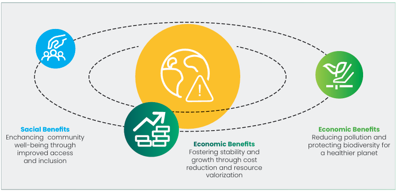
Figure 15 - Co-benefits of Mitigation Measures in Angola
In the energy sector, investment in hydroelectric and solar projects, many of which have already been funded or are in the implementation phase, has played a fundamental role in expanding access to electricity, especially in remote locations that until now were outside the coverage of the national grid. This electrification, based on clean and renewable sources, allows access to essential services such as healthcare, education and communication, thus helping to reduce territorial inequalities. At the same time, the construction and operation of these energy infrastructures has boosted the creation of local jobs and promoted economic development in the regions covered. Diversifying the energy mix by integrating indigenous sources also contributes to more stable energy prices and reduces dependence on imported fossil fuels. By reducing the atmospheric pollution associated with conventional energy production, these measures also have a positive impact on public health, namely by reducing the incidence of respiratory diseases.
The benefits of the measures in terms of transport are also manifold. The progressive implementation of the Electromobility Plan, which involves replacing the public administration fleet with electric vehicles and introducing electric buses in urban transport, will reduce pollutant emissions in densely populated areas, thereby improving air quality and people's health. This technological transition could also stimulate the emergence of new markets and business sectors related to energy innovation and sustainable mobility. Meanwhile, the construction of the Luanda Surface Metro will be a decisive step towards ensuring more efficient, accessible and inclusive urban mobility, improving the daily lives of thousands of citizens.
In the forestry sector, initiatives to conserve, reforest and restore forest ecosystems generate significant environmental and socio-economic benefits. Protecting and restoring vegetation cover helps to preserve biodiversity, regulate water resources, and prevent extreme phenomena such as erosion and flooding.
In the field of waste management, processing the organic waste for composting significantly reduces the amount of waste deposited in landfill, offering clear advantages in terms of public health and environmental protection. The production of organic compost provides a valuable agricultural resource that can strengthen family and sustainable farming, promoting productivity and soil regeneration. Furthermore, developing this type of solution creates new employment opportunities, particularly in peri-urban and rural areas.
In summary, the identified mitigation measures not only reduce greenhouse gas emissions but also serve as catalysts for Angola's sustainable development. Each measure supports multiple Sustainable Development Goals (SDGs), reinforcing national climate commitments while simultaneously fostering social inclusion, strengthening environmental resilience, and stimulating local economic opportunities. This integrated approach ensures that climate action becomes a pathway towards a more equitable, low-carbon and prosperous future for all (Figure 16).
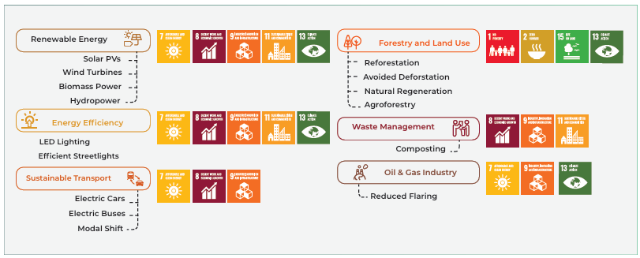
Figure 16 - Alignment of Angola's Climate Mitigation Measures with the Sustainable Development Goals (SDGs)
In 2023 the Intergovernmental Panel on Climate Change published its Sixth Assessment Report (AR6), a document which identifies a steep rise in global surface temperature since 1850-1900, reaching a total of 1.1°C above pre-industrial levels during the period comprehended between 2011 and 2020. This rise in temperatures is directly linked to greenhouse gas emissions derived from human activities such as energy usage, land use and land use changes: the concentration of CO2 and other greenhouse gases in the atmosphere has increasingly accelerated from 1850 onwards, with a particular high increase in since the end of the 20th century.
At the same time, the Sixth Assessment Report unequivocally states that rising temperatures have prompted 'widespread and rapid changes in the atmosphere, ocean, cryosphere and biosphere', with dire consequences across the globe. Climate change effects, such as droughts and floods resulting from heavy rainfall, and tropical cyclones, have negatively impacted several domains of economic, political and social life, with disproportionate effects on vulnerable communities. These same effects are expected to become more frequent and severe over the forthcoming years, with implications for public health, food and water security, and infrastructure, among many other areas. Furthermore, over 3.3 billion people are currently highly exposed to these climate change impacts, particularly in regions such as Africa, Asia, or Low Developing Countries.
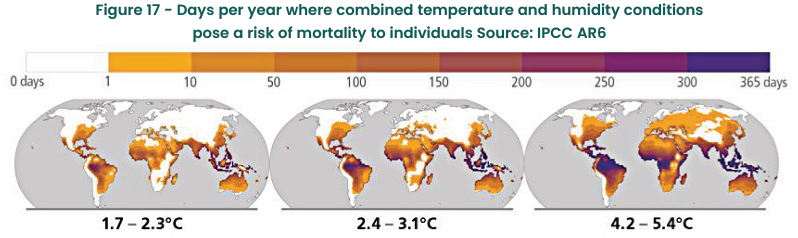
Figure 17 - Days per year where combined temperature and humidity conditions pose a risk of mortality to individuals Source: IPCC AR6
In this context, Article 2 of The Paris Agreement clearly states that one of its aims is to increase 'the ability to adapt to the adverse impacts of climate change and foster climate resilience and low greenhouse gas emissions development', while also establishing the global goal of 'enhancing adaptive capacity, strengthening resilience, and reducing vulnerability to climate change', as per its Article 7.
As a country situated in a zone of considerable risk regarding droughts, heatwaves and other weather phenomena, Angola recognizes the necessity of adapting its economy to future climate impacts and to foster domestic resilience against its negative effects. To this effect, and in addition to its condition and unconditional mitigation contributions, Angola decided to support the global efforts of adaptation and resilience strengthening by including a conditional and unconditional climate change adaptation contribution within its updated Nationally Determined Contribution.
With this additional contribution, Angola intends to increase its ability to protect ecosystems, people, livelihoods and strategic sustainable development and economic investment, taking into account the urgent and immediate needs of the country, based on the best science available and national context.
Article 7 of the Paris Agreement encourages Parties to voluntarily submit an adaptation communication to report on adaptation. The present section of the NDC, which results from an extensive review of relevant documents on climate adaptation that have been developed over time, serves as this adaptation communication for Angola. Whilst the National Strategy for Climate Change 2022-2035 and its sectorial working papers were the central axis of this review, the process encompassed the assessment of a series of major documents developed by Angola, such as:
This series of documents denote Angola's prioritization of adaptation measures for certain specific sectors, namely: Agriculture and Fisheries, Coastal Zones, Forests Ecosystems and Biodiversity, Water Resources, Human Health, and Infrastructures. Chapter 4.2. of this document, 'Impacts and Priorities for Climate Change Adaptation', will further explore each sector and the climate impacts they are subject to in light of the country's circumstances.
Angola's vulnerability to climate change has been felt in varied areas and policymakers are aware that the number of economic and social segments affected by climate events, as well as the severity of these occurrences, is expected to increase in the near future. Major vulnerabilities include hydrological aspects of the Angolan territory, socioeconomic characteristics of the country's population, and urban and environmental challenges, with a specific incidence on coastal zones.
As a country situated in a tropical zone, Angola is extremely susceptible to hydrological vulnerabilities, which are mostly discernible when affected by climate events, as was the case of the 2013 drought that affected 1.8 million people in five southern provinces, exposing them to death and malnutrition. Deficiencies in drainage systems and the cumulative effects of erosion on national soil also exacerbate the probability and intensity of floods during heavy rainfall periods, paving the way for health crises and loss of lives with particular incidence in urban areas like Luanda.
On the other hand, socioeconomic aspects such as high fertility rates, high poverty, low economic diversification, and inadequate infrastructure heighten Angola's susceptibility to natural disasters and health emergencies. As previously mentioned, as of 2018, 32.3% of Angola's 37.8 million population live below the national poverty level, a situation which has placed the country at the 150th place out of 193 countries in the Human Development Index (2023/2024) and from which derived a higher than average exposition of almost ⅓ of the country's population to the effects of climate-related events.
Furthermore, IPCC'S 6th Assessment Report underlines the exceptional vulnerability of low-income households to the effects of climate change, as well as those of indigenous communities and small-scale food producers, whose low capacity to answer the effects of extreme weather events jeopardises their ability to sustain their livelihood. On a global scale, these vulnerabilities are particularly evident both in children and women, who are more prone to undernutrition and malnutrition as a consequence of extreme weather events, due to their precarious life conditions. In the specific case of Angola, women in rural areas have been identified as one of the most vulnerable groups within society, due to the informal and subsistence character of their activities and their strong reliance on natural resource-based livelihoods such as agriculture, fishing, and selling non-timber forest products, which are increasingly vulnerable to climate-related hazards.
Climate change also affects men, women, boys, and girls differently depending on their roles in society and the economy. For example, during droughts, girls may be withdrawn from school to fetch water over long distances, increasing their exposure to protection risks such as early marriage and gender-based violence. Boys may also leave school to accompany livestock in search of grazing areas, disrupting their education. These differentiated experiences underscore the need to consider social roles and gender dynamics in the design of climate adaptation and resilience strategies, particularly in sectors such as agriculture, water, energy, health, and livelihoods.
In addition to this, and on a macroeconomic dimension, Angola's economic growth in past years has been driven by an oil-based economy, which was deemed as incompatible with the national and international low-carbon pathways, resulting in fewer opportunities for new investment. Despite the fact that GDP has grown over time, recent investments have not been sufficient for advancing Angola overall economic development pathway and reverting the tendency of poverty within the lower socioeconomic strata of the population.
To counterbalance this decrease in oil investments, Angola has focused on the diversification of its economy to foster employment and economic growth, along with human capital and infrastructure development. However, economic diversification is highly dependent on key sectors (agriculture, fisheries and manufacturing, infrastructure), which not only are highly sensitive to climate-induced effects but have also been subject to extreme climate events (such as droughts and floods) as well as anthropogenic pressure (e.g. natural resource degradation, culminating in substantial direct economic losses. For instance, already during the publishing of IPCC's 5th Assessment report, Angolan fisheries were identified among the most vulnerable to climate change effects, with projected losses of several million dollars over the coming years.
Finally, Angola faces exceptional environmental and urban exposure to climate change effects on littoral zones due to the complexity of its marine ecosystems and concentration of urban conglomerates in coastal lines. On the environmental sphere, The Benguela Current Large Marine Ecosystem (BCLME), which borders the coasts of Angola, Namibia and South Africa is of special importance since it is bounded on both the northern and southern ends by tropical or sub-tropical regimes. The Benguela waters provide for a rich diversity of marine life and coastal communities are substantially dependent on the nutrient upwelling of the current, aspects that turn this system especially sensitive to long term climate change.
With regards to the urban dimension, coastal areas are considered as extremely vulnerable to rises in sea level and are consequently considered high-risk zones. This is of noteworthy importance since over 68.1% of Angola's population lives in urban areas and is concentrated in eight of the major cities found along Angola's 1650 km long coastline, with approximately 27% living in the country's capital, Luanda. In addition to this, an estimated 10% of the total population resides in risk areas subject to aggravated losses and damage as a consequence of natural disasters during the rainy season. Overall, coastal and urban areas are prone to experience infrastructure strain due to rapid population growth and poor housing conditions, which can be exacerbated by climate-induced effects. Since sea level rise projections, based on observed sea level rise from the period 1980 to 1999 and factoring RCP 4.5 and 8.5 projections, indicate range of potential sea level rise of between 35 cm and 93 cm by 2100, a large proportion of the population is currently vulnerable to the possibility of being displaced due to major modifications in the coastline.
As described before, Angola is highly vulnerable to extreme weather effects, as well as gradual changes induced by climate change such as sea level rise or temperature variability. This is of particular importance since these occurrences are expected to become more frequent and severe over the upcoming years, with disproportional impacts on regions, communities and households which have the lowest ability to respond. Angolan policymakers and other stakeholders are increasingly aware of this tendency, and during the past years have considered necessary to not only analyse the ever-more-present signs of changes in global and regional biophysical systems and the vulnerabilities within Angola's society and economy, but also to assess the impacts that derive from climate change and influence the various socio-economic sectors so as to plan and mobilise resources to execute and adequate response. Therefore, a list of the most prevalent climate change impacts have been compiled and presented in the image below.
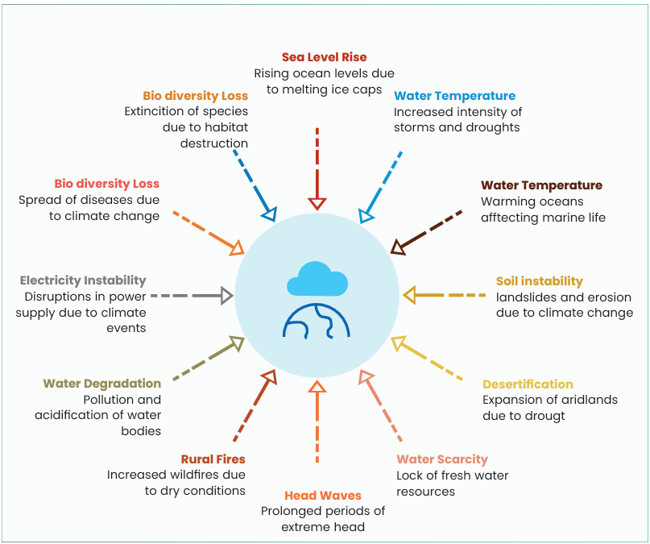
Figure 18 - Climate change impacts[16]
Furthermore, each of the prioritized sectors previously identified - Agriculture and Fisheries, Coastal Zones, Forests Ecosystems and Biodiversity, Water Resources, Human Health, and Infrastructures have specific characteristics and impacts that differentiate them from the rest. Such characteristics and impacts are further explored below.
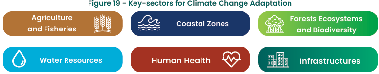
Figure 19 - Key-sectors for Climate Change Adaptation
With respect to agriculture, climate change effects such as temperature variability, changes in rainfall patterns or the occurrence of droughts, pose challenges for the viability of plantations, mainly when it comes to crops with a low tolerance to weather changes. This, in turn, demands that farmers adopt practices like precision agriculture and agro-forestry in order to maintain their productivity.
When it comes to fisheries, climate change impacts are highly probable to profoundly impact one of the sectors with most economic development potential in Angola. The vulnerability of Angolan fisheries has already been exposed in the previous chapter, and impacts might arise in face of phenomena such as the generalized heating of surface waters on the northern and southern borders of the front of the Benguela current and cooling on the western and southern coasts of South Africa. This could result in modifications in the distribution and stocks of fish off the coast of Angola, thus incurring in severe economic losses: by 2050 the value of fisheries in West Africa, including Angola, is expected to decrease 21%, resulting in a loss of $ 311 million in revenue.
Additionally, the increase in water temperature might also trigger changes on the major currents of the Angolan seacoast (Benguela and Gulf of Guinea), with subsequent impacts in the levels of salinity and existing marine ecosystems. The impacts of an increase in water salinity might also extend to freshwater bodies like rivers, deteriorating the conditions for inland fishing in the country.
As pointed before, Angola's littoral line is extremely vulnerable to the effects of climate change, whose impacts might be aggravated due to the fact that this zone concentrates a sheer amount of the country's population, infrastructures and economic activity. Fishing operations and recreational and touristic activities associated with the existing natural resources all take place in the coastline, and are highly dependent on favourable climatic conditions to extract value and generate economic benefits for the society as a whole.
As an effect of climate change and overall warming of the globe, the average level of the sea waters is expect to increase between 0.13m and 0.56m by 2090, compared to the levels registered between 1980 and 1999. From an increase of this order can potentially derive negative impacts on the population (mainly in densely populated areas close to the ocean, as is the case of Luanda) and infrastructures present in the coastline, with the displacement of the former from their homes and the destruction of the latter due the damage inflicted by their exposition to seawater, thus impairing the national prospects of economic development.
In addition to infrastructure and settlement vulnerabilities, the preservation of coastal ecosystems, particularly mangroves found in provinces such as Zaire, Luanda, and Benguela, is essential for climate adaptation. These ecosystems act as natural buffers against storm surges, coastal erosion and flooding, contributing to the resilience of coastal communities. They also play a key role in preventing saltwater intrusion into freshwater systems and protecting agricultural lands. While primarily an adaptation measure, mangrove conservation offers co-benefits for mitigation through blue carbon sequestration and can support sustainable livelihoods, especially for coastal fishing populations. These functions highlight the importance of ecosystem-based approaches in Angola's coastal management strategies.
The preservation of forests and ecosystems is not only essential as an instrument along the lines of emission mitigation due to their ability to perform as carbon sinks but also owing to the fact that forests provide ecosystem services which are vital for Angolan social and economic life, and for the advancement of climate change adaptation within the country. Angola has a wide range of ecosystems, with tropical humid forests - whose conservation is essential to support biodiversity found mainly in the provinces of Cabinda, Zaire, Uíge, Kwanza Norte and Kwanza Sul.
To reinforce this, inland wetlands and peatlands, particularly in Cuando Cubango, Moxico, Moxico Leste, Huambo, and Bié provinces, are highly vulnerable ecosystems facing degradation from fire, unsustainable agriculture, and increasing human pressure. These systems are critical for sustaining rural water availability, regulating dry-season flows, and supporting community livelihoods.
Likewise, Miombo woodlands in Cuando Cubango, Bié, Moxico and Moxico Leste provide essential ecosystem services such as water regulation, fuelwood, non-timber forest products, and biodiversity habitat. However, they are under mounting pressure from shifting cultivation, charcoal production, and frequent fires, which threatens rural subsistence and ecosystem integrity.
In southeastern Angola, peatlands and adjacent woodlands form interconnected landscapes that support Angola's role as a regional water tower. These ecosystems underpin the headwaters of major transboundary basins such as the Okavango and Zambezi, and their degradation has serious implications for regional water security, including downstream drought and flood buffering. Communities living near these ecosystems are directly impacted by their degradation. Many rely on forests and wetlands for agriculture, water, and traditional livelihoods, and are increasingly exposed to fire, soil degradation, and declining ecosystem productivity. Thus, protecting these ecosystems is essential for building community resilience.
Climate-induced shifts and human-caused pressures have increased the frequency and intensity of fires in woodlands and peatlands. Recurrent late dry-season fires result in biomass loss, increased carbon emissions, and reduced food and water resources. Furthermore, many of Angola's most ecologically valuable landscapes, including peatlands, inland wetlands and upper watershed forests, lie outside formal conservation frameworks. This leaves them vulnerable to unmanaged land conversion and reduces opportunities for integrated adaptation and mitigation strategies.
Fire is a major driver of greenhouse gas emissions in Angola's miombo and peatland landscapes. In 2023, wildfires burned 42.5% of mapped peatland areas in southeastern Angola. Studies indicate that shifting fire regimes from late to early dry-season burns could reduce emissions by up to 2.19 MtCO 2 e annually[46]. In Cuando Cubango specifically, improved fire management in peatland zones could avoid as much as 387,000 tCO 2 e per year. These findings highlight how ecosystembased adaptation strategies, such as controlled burning and fire regime adjustments, not only enhance ecological resilience but also deliver measurable mitigation co-benefits[46][47].
Angola possesses abundant in water reserves and has the potential to fulfill satisfactorily all water demand exercised by the population and industry as long as it has the necessary network of infrastructures for storage, supply, treatment and distribution of its water resources. However, the country faces obstacles regarding the existence of information and monitoring systems for its watersheds, and often encounters difficulties related to management of its water reservoirs due to a lack of knowledge of their status and of the impacts generated on them as a consequence of climate change, since the mechanisms and technical capacities available for climate monitoring are insufficient to support the realization of long-term climate projections.
Nevertheless, Angolan policymakers are conscious that droughts will become longer and more frequent as climate patterns evolve during this century, and that the intensity of this extreme weather events will not only cause a surge in the demand for water in areas traditionally affected by droughts but also create a new wave of necessities in zones not previously affected by water scarcity. Special consideration must be given to the southern part of Angola, fustigated by severe droughts over the past decade. Between 2015 and 2016, more than one million people were affected in the Provinces of Huila, Namibe and Cunene, causing damages of $286 million and economic losses of approximately $437 million. In 2021, over 1.2 million people in the six southern provinces continue to face water scarcity because of the drought, and by 2060 higher temperatures and droughts are expected to encompass most of the country, with significant implications for water availability.
This expansion of dry conditions causes, in turn, serious consequences for the diversification of the economy in sectors like agriculture, where direct economic losses from droughts may rise from as much as USD 100 million per year nationwide to more than USD 700 million per year by 2100. In addition to this, there are also concerns that climate change will exacerbate natural soil erosion in many regions of the country, with dire implications for sedimentation in river basins.
In this context, it is also important to recognise the role of Angola's natural ecosystems in regulating water flows. Headwater forests and peatlands in the southeastern provinces of Cuando Cubango, Moxico, Moxico Leste, Huambo, and Bié serve as a regional 'water tower', supporting the flow of major transboundary basins such as the Okavango and Zambezi. These ecosystems help buffer the impacts of both droughts and floods and sustain water availability for rural communities. Their degradation, driven by recurring fires, unsustainable land use, and increasing human pressure, threatens national and regional water security. Protecting these ecosystems offers a dual opportunity for climate adaptation and mitigation through improved fire management and nature-based solutions.
Human health has long been linked to climate variability, firstly due to negative health impacts arising from extreme climate events, such as heat waves, hurricanes/storms, floods and droughts, but also according to consequences of gradual changes of climate which influence water and food security as well as air quality. According to the IPPC's 6th Assessment Report, extreme heat events all over the world have resulted in increased incidence of water-borne, food-borne and vector-borne diseases. Over the past years, animal and human diseases have emerged in areas not previously affected by them, in a phenomenon that is expected to be amplified in the near future.
In this scenario, vector-borne diseases are of particular importance since the incidence of malaria in Angola is one of the highest in the African continent and represents the main cause of death in the country (130 per 1000 inhabitants in 2014), affecting the child population in a remarkable way: around 33% of perinatal deaths are attributed to malaria infection and in some districts, such as Bengo and Uíge the percentage of positive cases in children aged 0 to 5 years can reach values as high as 40%. Furthermore, it is estimated that about 37% of households are located in areas exposed to diseases such as malaria, a number which is prone to increase as the climate patterns enable a higher dispersion and incidence of disease vectors.
These climate patterns include high temperatures and changes in precipitation, as assessed by IPCC's 6th Assessment Report, leading to the prolongation of favourable conditions for the exponential growth of species of mosquitoes that transmit malaria and other diseases. According to climate projections developed for the Angolan context, even in areas with altitudes above 1500m, where the risk of contracting malaria is significantly lower, episodes of malaria are expected to become more frequent.
In addition, the impacts of climate change on health are not experienced equally across the population. Women and girls are often more exposed to specific health risks due to their caregiving roles and the nature of their daily tasks. For example, collecting water from distant sources during droughts increases the risk of exposure to waterborne diseases and physical exhaustion, while cooking with biomass fuels contributes to higher rates of respiratory illnesses. These gender-differentiated health vulnerabilities are further compounded by limited access to healthcare services, especially in rural areas. It is therefore important that health adaptation measures consider these dynamics to ensure a comprehensive and inclusive response to climate-related health challenges[43].
Other impacts of climate change on human health include increased mortality and morbidity as a consequence of exposition to extreme weather events, a risk of maternal malnutrition and child undernutrition in areas prone to food shortages, heat stress and dehydration due to longer drought periods of a higher magnitude, and challenges for the mental health of citizens exposed to climate hazards.
Angola's infrastructure network is often in a precarious state owed to the fact that the country underwent a civil war for approximately 27 years. Efforts have been made to recover damaged infrastructures after these conflicts, but their current conditions are not sufficient to face the effects of climate change and further damage can occur if no investments are made to adapt the current network to future climate scenarios.
These include roads and bridges, which can lead to the isolation of communities and challenges for the circulation of medical emergency services during crises, as well as to impediments related to the evacuation of populations. Negative effects are not only limited to the health factor and can also impact economic factors, since an interruption of roadways can disable the traffic of goods and pose barriers to access to schools, workplaces and markets, resulting in direct economic losses for the Angolan economy. Maintenance costs of these roadways may also become higher if they are not previously adapted to the effects of a changing climate.
Extreme and slow-onset events have been proved to impact infrastructures, with emphasis on floods, cyclones and other disruptive episodes. IPCC'S 6th Assessment Report identifies transportation networks as one of the major elements affected but underlines that other infrastructures such as water and energy supply networks, hospitals and sanitation systems might also be directly impacted by the higher frequency, duration and magnitude of these events. In the case of Angola, where major infrastructures such as airports, oil production and most industries are linked to the eight major cities, climate change can result in the impairment of a significant amount of economic activities.
As previously mentioned, Angola is a country profoundly exposed to acute climate change effects with the potential of triggering devastating effects in the national economy and social stability. These effects have been present in the country's recent past and will tend to worsen with the passing of the century. Therefore, it was deemed as crucial the definition of strategical actions to develop Angola's resilience and adaptative capacity in the major sectors identified in the previous sections: Agriculture and Fisheries, Coastal Zones, Forests Ecosystems and Biodiversity, Water Resources, Human Health, and Infrastructures.
The present Nationally Determined Contribution reflects the objectives of addressing the main vulnerabilities and impacts and advancing the adaptation component of the country's economy. Furthermore, the NDC encompasses three categories of actions with this objective: measures listed in the previous NDC which were not materialized during its time period and have thus been transferred to the new NDC; revised measures which have been updated to reflect the country's ambition for the period between 2025 and 2030; and new measures derived from national and sectoral strategies developed over the past years.
As mentioned before, Angola currently lacks the financial, technological and technical conditions to develop all the initiatives embodied in the present NDC. Therefore, the implementation of a significant part of the listed actions is highly dependent on the international support provided by other signatory Parties of the Paris Agreement. To this effect, the adaptation component of this NDC is divided in two main sections: adaptation actions that can be implemented solely on the basis of domestic resources - constituting the unconditional commitment of the country towards an economy and society more adapted to the future effects of climate change, and actions whose execution is dependent on financial and technological transfers from third-party countries - establishing the conditional commitments of the country.
Both unconditional and conditional actions can be consulted in the following chapters, along with the impact they are intended to mitigate and the estimated cost calculated in million U.S. dollars.
| Unconditional contributions | Impact Response | Cost (Million USD) 9 |
|---|---|---|
| Conduct studies on the impact of climate change on fishing productivity and coastal economies | Acidification of the sea and fresh water; | 17,70 |
| Develop community and school gardens | Rising water temperature and increased | 5,00 |
| Apply the national collection of local seeds in programs to improve and create adapted local varieties | Salinization | 7,50 |
| Studies to deepen knowledge about possible measures to increase the resilience of national production systems in agriculture and livestock, with the establishment of partnerships with other countries to transfer technologies. | Increased frequency and intensity of heat | 10,00 |
| Development of programmes to recover forest areas, agricultural areas and degraded pastures. | Waves / heat island effect | 5,00 |
| Assess the defence capacity of existing protection structures in risk areas, including the analysis of the feasibility of new investments for the construction of protection structures against sea level rise | Sea level rise | 2,00 |
| Development of programmes for forecasting, alerting and managing emergency situations | Increased frequency and intensity of floods and other extreme weather events | 3,00 |
| Develop forest fire prevention actions | Increased frequency and intensity of rural fires | 4,50 |
| Improve the management of existing conservation areas and continue the process of creating new areas | Change/Loss of Biodiversity | 5,80 |
| Develop characterization studies of hydrographic basins and groundwater | Degradation of assimilation and purification of water courses | 3,00 |
| Increase the number of meteorological and hydrometric stations to improve monitoring of rainfall and watersheds | Increased frequency and intensity of extreme precipitation events | 10,00 |
| Implement a water collection and storage system in drought- prone areas to ensure continuity of human supply and watering of livestock | Increased frequency and intensity of periods of drought and water scarcity | 4,83 |
| Improve existing wastewater collection and treatment systems and build new systems in underserved areas focusing on urban areas with a high concentration of population | Health risks and disease transmission | 13,82 |
| Map human settlements at risk of flooding and erosion. | Increased frequency and intensity of extreme phenomena that cause coastal overtopping and erosion | 2,00 |
| Improve the road network in the region, guaranteeing evacuation capacity and access for emergency services to the most isolated places where families are staying. | Increased frequency and intensity of floods and other extreme weather events | 18,00 |
| TOTAL | 112,16 |
| Unconditional contributions | Impact Response | Cost (Million USD) 10 |
|---|---|---|
| Conduct a study on the impact of changing the geographical distribution of animal diseases (infectious and parasitic) and the availability of water on the country's animal production levels | Health risks and disease transmission | 7,50 |
| Replicate the project 'Promotion of sustainable charcoal in Angola through a Value Chain Approach' in the Luanda-Uíge corridor | Change/Loss of Biodiversity | 17,88 |
| Definition of a network of marine protected areas that serve to preserve marine fauna. | Acidification of the sea and fresh water; Rising water temperature and increased salinization | 12,00 |
| Diversification of water sources to supply water to agri-food production activities, including use of underground resources and reuse of waste water | Increased frequency and intensity of periods of drought and water scarcity | 8,00 |
| Research and dissemination of the use of local crop varieties adapted to the adverse effects of the climate. | Increased frequency and intensity of periods of drought and water scarcity | 10,00 |
| Reinforce inspection mechanisms in order to limit the occupation of territory located in coastal areas at high risk of flooding to essential infrastructures | Increased frequency and intensity of extreme precipitation events | 2,00 |
| Assessment of the vulnerability of existing port infrastructures on the coastline and analysis of the need and feasibility of new investments for construction of structures to protect against the positive variation in the average level of the ocean | Sea level rise | 16,00 |
| Develop models to analyse the effects of climate change on biodiversity and ecosystems based on national and regional climate change scenarios | Change/Loss of Biodiversity | 5,10 |
| Actions to preserve forest perimeters in Huambo province, in line with the Government's efforts to elevate the province to the ecological capital of Angola | Change/Loss of Biodiversity | 3,00 |
| Create water drainage systems in high-risk areas | Increased frequency and intensity of extreme precipitation events | 14,50 |
| Build flood protection barriers along the main rivers (vegetation or physical barriers) | Increased frequency and intensity of extreme precipitation events | 5,00 |
| Create a water quality monitoring system for consumption in the main sources of drinking water | Degradation of assimilation and purification of water courses | 0,35 |
| Development of programmes at national, provincial and municipal level for the recovery of springs and the banks of watercourses for urban supply, irrigation and rural domestic use | Increased frequency and intensity of periods of drought and water scarcity | 6,00 |
| Implement an early warning system, involving the Civil Protection and the National Institute of Meteorology, in order to reinforce public health contingency and emergency plans in the face of the effects of extreme weather events | Health risks and disease transmission | 7,50 |
| Continuously update the territorial register | Increased soil instability and landslide | 5,00 |
| Implementation of energy-efficient air conditioning measures in public and private sector buildings to better combat heat waves and reduce energy needs. | Increased frequency and intensity of heat waves / heat island effect | 3,00 |
| TOTAL | 122,83 |
In similar fashion to the mitigation measures defined in the previous chapter, mitigation actions in Angola's Nationally Determined Contribution generate a series of additional sustainable development benefits that exceed its original purpose of enhancing the adaptative characteristics of national economic sector. These benefits comprise social, economic and environmental areas of impact and promote a more resilient natural environment, a higher quality of life, and a just transition which addresses needs from diverse segments of society.
In Angola this is of particular importance, due to historical challenges related to poverty, depletion of natural resources, infrastructure degradation and a high incidence of diseases with a significant mortality rate. The co-benefits generated by these adaptation actions aim not only to advance climate action within the country's context, but also to align Angola with a new path of sustainable development.
In the agriculture and fisheries sector, measures such as the realisation of studies to determine the status of fish stocks and its impact on the coastal economies, and the definition of a network of marine protected areas anticipates impacts on the country's blue economy - thus preventing severe economic damage to coastal communities - but also improve the status of marine life and attempts at an equilibrium between consumption needs and the conservation of underwater ecosystems. On agricultural side, the application of a national collection of local seeds, the conduction of efforts to increase the resilience of national production systems in agriculture and livestock, and the development of programmes to recover forest areas, agricultural areas and degraded pastures lead to improvements in the resilience of food production chains and in the conservation of the terrestrial ecosphere, therefore tackling the food necessities of Angolan citizens and promoting a more sustainable consumption of natural resources.
In relation to the coastal zones, the examination of risk zones in the Angolan coastline and the assessment of vulnerabilities in coastal infrastructures such as ports helps in identifying investment needs and in anticipating impacts on coastal communities, thus enhancing the resilience of these communities. Moreover, the development of programmes for forecasting, alerting and managing emergency situations increases authorities' ability to answer impacts from extreme weather events and avoid widespread health crisis.
With regard to the preservation of forests, ecosystems and biodiversity, measure such as a better management of existing conservation areas and the development of forest fire prevention actions play a fundamental role in protecting the natural heritage of the country and in assuring the existence of essential ecosystem services, creating more stability in rural areas and mitigating the social consequence of a severe degradation of their surrounding environment.
Actions in the area of water resources also generate crucial co-benefits in a context where drought episodes frequent and of a high intensity and duration. The implementation of water collection and storage system in drought-prone areas ensures access to water both for individual consumers and to agricultural ends, thus guaranteeing the resilience of food production and preventing health crisis situations related to water and food shortages. On the other, some areas in Angola have experienced episodes of heavy rainfall in recent periods, and measure like the creation of water drainage systems in high-risk areas and the construction of flood protection barriers along the main rivers can help prevent damage in both residential and commercial buildings, as well as in critical infrastructures, promoting social stability and economic growth.
In the field of human health, and apart from the early warning systems so crucial to address the consequences of extreme weather events, is of utter importance to underline the improvements in existing wastewater collection and treatment systems and the construction of new systems in underserved areas as a means to prevent and tackle sanitary crises, particularly those related to the dispersion of high-incidence diseases such as malaria.
Finally, and apart from the actions mentioned before, the measures designed for the infrastructure sector also play an important role in improving the quality of life of more isolated communities and in reinforcing the economic status of the country. Among these, measures such as the improvement of the road networks in Angola are of particular importance, since they not only guarantee evacuation capacity and access for emergency services for isolated locations but also improve the circulation of goods and services in the country, therefore creating opportunities for a higher economic output.
Overall, the identified adaptation actions are not confined to an enhancement of adaptative abilities but also drive sustainable development in the country, through a promotion of multiple Sustainable Development Goals (SDGs). Each key sector encompasses measures that improve the stage of multiple SDGs (as can be seen in Figure 20) and stimulate a climate transition which is just for every Angolan citizen.
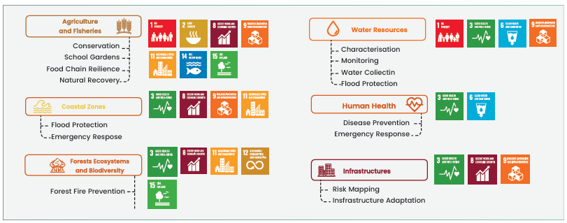
Figure 20 - Alignment of Angola's Climate Adaptation Measures with the Sustainable Development Goals (SDGs)
An effective implementation of Angola's NDC is dependent on existence of a harmonised governance structure able to effectively implement the measures that form the basis of the mitigation and adaptation contributions, while simultaneously ensuring these same actions are subject to a wellorganised monitoring, reporting and verification system.
To this end, Angola developed an institutional architecture with the objective of ensuring the satisfactory performance of both these functions, whose main components consist of crosssectorial collaboration and a continuum of previously existing systems and policies.
Angola's NDC is a result of a multi-institutional effort shared between all Ministries overseeing core areas related to the mitigation and adaptation contributions stipulated in the document, whose coordination was mediated by the Ministry of Environment (MINAMB). Furthermore, the current NDC builds on several national policies developed over the past decade, aimed at reducing greenhouse gas emissions and developing a low-emission transition pathway for the Angolan economy, in addition to increasing the resilience and adaptative capacity of the country. Among these, it is particularly important to highlight the National Strategy for Climate Change, a central pillar of Angola's efforts on climate change which was developed in light of major national and sectoral policies, strategies and plans.
For an efficient implementation of the NDC, the continuity of this cross-institutional coordination will be indispensable so as to guarantee an effective allocation of responsibilities and a synchronization between all policy-making bodies will be necessary in order to identify and promulgate legislation with the objective of advancing Angola's mitigation and adaptation targets. Moreover, this harmonization between ministries will be fundamental to ensure the implementation of an integrated monitoring, reporting and verification system to evaluate the progress of the country's efforts over the NDC's period of implementation.
An implementation effort shared by all relevant government bodies is expected to recognize the more sensitive areas regarding both vectors of the NDC - a reduction in greenhouse gas emissions and an advancement in adaptative abilities of Angolan economy and society - and define the priority interventions amid the wide-ranging sectoral planning. Moreover, the institutional architecture of the coordination efforts determined for the NDC implementation will be aligned with the National Strategy for Climate Change (ENAC 2022-2035) and will give continuity to the arrangements defined in the previous NDC
Angola's climate action efforts and institutional architecture are supported by a series of legal arrangements which incentivize a proactive adoption of measures by governmental organisations. The Constitution of the Republic of Angola, the cornerstone of Angolan law which was established in 2010, openly states, in its articles 21 and 39, the right of citizens to live in a healthy and unpolluted environment. Furthermore, it charges the organs of the state with the task of promoting the harmonious and sustained development, demanding them to 'adopt the necessary measures to protect the environment and the species of flora and fauna throughout the national territory, to maintain the ecological balance, to correctly locate economic activities and to rationally exploit and utilise all natural resources, within the framework of sustainable development and respect for the rights of future generations and the preservation of the different species.'
Apart from the country's Constitution, the Environment Framework Law (Law no. 5/98 of 19 June) is of utter importance since it establishes a set of general principles relating to the protection, preservation and conservation of the environment. Law no. 5/98 of 19 June also stipulates that quality of life should be promoted by state institutions and decision-makers, and that national natural resources should be exploited in a rational way, thus placing the environmental dimension of policymaking in accordance with the Constitutional Law of the Republic of Angola.
Finally, Law no. 3/06 of 18 January established the Law on Environmental Defence Associations, a complementary legislation to the aforementioned decrees that regulates the form and modalities of citizen participation in the environmental management of the country. According to article 5 of this law, environmental associations 'have the right to participate and intervene in the definition of environmental policy' and to 'participate in public administration advisory bodies with competence in matters relating to the environment, nature conservation, constituted natural heritage and spatial planning'.
Despite the central character of these three laws, other relevant legislation pieces in the field of the environment also performed a role in shaping Angola's approach to environmental matters and, more specifically to climate ones. These included the Land Law (Law no. 9/04, of 9 November), the Agrarian Development Framework Law (Decree-Law no. 15/05, of 7 December), the Law on Spatial Planning and Urbanism (Law no. 3/04, of 25 June), the Water Law (Law no. 6/02, of 21 June), the Aquatic Biological Resources Law (Law no. 6-A/04, of 8 October), the Law on Geological and Mining Activities (Law no. 1/92 of 7 October), and the Law on Petroleum Activities (Law no. 10/04 of 12 November), as well as its respective decrees on the protection of the environment in light of petroleum activities.
The incorporation of an environmental dimension in Angola's fundamental laws allowed for the development of several strategies and policy instruments with the objective of promoting a symbiosis between economic growth and a sustainable exploitation of natural resources and conservation of environmental characteristics of the country. Naturally, these also reflected Angola's preoccupations with climate change - both in its mitigation and adaptation components - and its commitments on the international stage.
First and foremost, climate action is now deeply embedded in Angola's long-term development strategy, the Angola 2050 Strategy, which counts with several targets on electrification, renewable energy incorporation, and the reinforcement of key sectors on the Angolan economy so as to improve their adaptation capacities in the short, medium and long terms. The Angola 2050 Strategy is the guiding tool for national policymakers over the next 27 years and is clear in the commitment of the country towards a holistic approach that 'recognises the interdependence between economic development, the improvement of human capital, the quality of infrastructural investments and environmental sustainability'.
Governmental organs are therefore called to take action regarding the attainment of the environmental goals defined nationally and internationally, in order to ensure the fulfilment of strategy's objectives, namely the removal of oil as the backbone of the Angolan economy by 2050 and the enhancement of other sector's resilience in face of anticipated climate impacts.
Secondly, Angola has developed a National Strategy for Climate Change (ENAC 2022 and 2035) with the general objective of promoting a national context adapted to the impacts of climate change and with a low-carbon development that also contributes to the eradication of poverty. The National Strategy for Climate was developed in consonance with the long-term strategy for the country, and consists of five main pillars:
The strategy recognises the importance of reinforcing competences in the main national actors (governmental institutions, society, private stakeholders, etc.) and sets the strategic approach from 2022 onwards, with a particular focus on the advancement of decarbonization within Angolan economy and the increase in adaptative efforts by decision-makers and government and state institutions. To this effect, a general basis for institutional organisation was established, an organization that later informed the formulation of the country's NDC 2.0 and the present NDC 3.0, and which be consulted in figure 19, present in the next chapter.
Other major policy tools in the context of Angola's climate action include the National Afforestation and Reforestation Strategy, adopted in 2010, the Strategic Plan for Disaster Risk Management, approved in the following year, and the National Action Program to Combat Desertification, which came into force in 2014. Additionally, national authorities are currently conducting a reformulation of the country's National Adaptation Plan, and Angola intends to submit the updated document until September 2025, which will enhance the country's response to climate change impacts in domains such as fisheries, water resources, agriculture, infrastructures and food security, among others.
The new international apparatus formulated in the aftermath of the Paris Agreements demanded a review of each Party's institutional architecture in order to accommodate the new goals established both for greenhouse gas emissions mitigation and for the adaptation in face of the drastic effects triggered by climate change. Accordingly, Angola developed efforts to create an organizational structure which would be able to support the country in fulfilling its obligations under the new mechanisms established by the Agreement.
This structure has at its centre the Ministry of Environment through the National Directorate for Climate Action and Sustainable Development with the purpose of representing Angola in international climate affairs and of coordinating domestic exercises derived from supranational negotiations and decisions. The Climate Change Office is accountable for the country's participation in international dialogues on climate change policy, as well as for the reporting exercises of the country to the UNFCCC, while promoting engagement with relevant stakeholders, including youth and youth organisations, in line with inclusive governance principles.
Angola has also instituted a National Commission on Climate Change and Biodiversity (CNACB), with the aim of improving its efforts on the climate action dimension and of increasing political and executive harmonisation among the most influential entities in this thematic. Initially constituted by the ministries directly related to climate action efforts, the CNACB has evolved in light of its early experiences: advancing cooperation between the various ministries remained a central topic of the commission's mandate, but a greater focus was given to the dynamization of a higher level of synchronization between ministries and public institutions, as a key component for the achievement of an effective reduction in greenhouse gas emissions and enhancement of adaptative capacity within Angolan territory.
As a result, the CNACB enlarged its scope of participation, taking into account provincial governments and other public institutions, so as to provide a platform for the inputs of regional and local organisations on the implementation of the country's Nationally Determined Contribution. Furthermore, the CNACB proceeded to the implementation of two bodies - an Executive Committee and a Technical Committee - in order to ensure a more operational approach and to enhance the overall efficiency of the Commission's outcomes, particularly in terms of intersectoral coordination. Angola's second Nationally Determined Contribution further explores the role of the restructured CNACB in the country's climate action efforts, stating that the organism should act both as a 1) mediator between other institutions so as to create a thriving environment for public discussion allowing for the enrichment of each participant's contribution, and a 2) communication channel, providing information on climate change effects and solutions through public and educational awareness campaigns, with a special focus on assuring an egalitarian access to information and participation between genders.
The proposed reorganisation of the National Commission on Climate Change and Biodiversity is detailed in Table 10.
| National Commission on Climate Change and Biodiversity | |
|---|---|
| Assignments (proposed newassignments) | Concert the Initiatives and harmonize policies for the implementation of the national strategy on climate change and the strategy for the preservation of biodiversity; Create the necessary conditions for the execution and implementation of NDC; Coordinate and articulate the different sectors in the implementation of the Initiatives defined in this NDC; Create a national investment plan that integrates the mitigation and adaptation initiatives foreseen in NDC, articulated with the future Angolan Fund for Climate Change (PAAC); Create centers of excellence to carry out studies of disasters and systematic observations and observation of the climate; Formulate proposals on national mitigation and adaptation policies for climate change; Identify legislative needs on the matter; Coordinate the integration of climate change policies in the various sectors of the economy and at the provincial level; Prepare an opinion on climate policy documents developed by the Ministerial Department responsible for the Environment for submission to UNFCCC; Prepare a recommendation opinion on climate policy documents developed by the Ministerial Department responsible for the Environment for submission to UNFCCC; Develop guidelines for planning and preparing NDC progress assessment reports; Promote public discussion on climate change; Establish an NDC monitoring secretariat. Formulate proposals on national mitigation and adaptation policies for climate change; Identify legislative needs on the matter; Coordinate the integration of climate change policies in the various sectors of the economy and at the provincial level; Prepare an opinion on climate policy documents developed by the Ministerial Department responsible for the Environment for submission to UNFCCC; Prepare a recommendation opinion on climate policy documents developed by the Ministerial Department responsible for the Environment for submission to UNFCCC; Develop guidelines for planning and preparing NDC progress assessment reports; |
| Composition | Executive Committee, composed of the Minister of the relevant Ministerial Departments, to meet at least quarterly. Technical Committee, composed of focal points technical offices of the relevant Ministerial Departments, to meet at least once a month |
| Indicators | Elaboration of annual activity plans Creation of working groups to discuss the theme of climate change in various sectors Meetings held Periodic publication of documents within the scope of Angola's obligations under the UNFCCC (National Communication, INDC, BUR) |
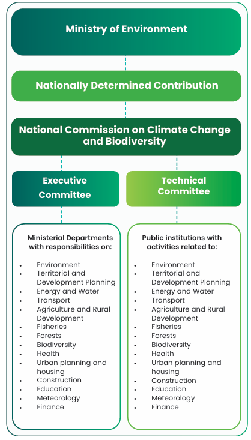
Figure 21 - Institutional Arrangements for NDC Implementation
As previously described, a correct implementation and execution of the measures defined in Angola's NDC requires an intersectoral approach and the involvement of multiple institutions in order to mobilize resources and services and to supervise the project developments. Unquestionably this mobilization cannot depend solely on domestic conditions, and Angola efforts shall be supported by international climate finance flows and a technological transfer from partner countries which will allow an advancement of the emission reduction goals and the national objectives related to its adaptative capacities. This dependency on international conditions will be further explored in the next sections of this Nationally Determined Contribution, namely those incorporated in chapter 6 Means of Implementation.
Despite this necessity of international support, Angolan institutions are responsible for creating an appropriate environment for receiving this assistance. During the development of the previous NDC, the need to develop a NDC Partnership Plan was recognised, so as to dynamize climate action and the implementation of the document's project for the period between 2020 and 2025. For the current NDC, a similar document is needed, whose development shall involve several layers of the institutional apparatus and public and private spheres, from central and regional governments to the private sector, non-governmental organizations and other sections of civil society such as academia a social and environmental associations.
To assure the correct development of this NDC Partnership Plan and implementation of Angola's Nationally Determined Contribution, it is indispensable to name the main actors associated with this process and associate them with their chief responsibilities. This exercise was initiated during the development process of the NDC, and its results can be consulted in Table 11.
| Stakeholders | Responsibilities |
|---|---|
| Government and public institutions | • Create legislative conditions to provide the best possible environment for developing projects that mitigate climate change; • Implement mitigation and adaptation projects; • Leverage investment, taking advantage of international financing lines; • Budgetary allocation of Angolan funds for climate change; • Sensitize the population and the private sector to the need to respond jointly to the problem of climate change. |
| Ministerial Department responsible for the Environment | • Coordinate and monitor the implementation of NDC; • Represent Angola in the UNFCCC negotiations; • Responsible for reporting under UNFCCC; • Coordinate and develop mitigation and adaptation measures; • Coordinate and develop training and awareness actions; • Coordinate and boost climate finance. |
| Private sector | • Take advantage of investment lines to develop mitigation and adaptation projects; • Participate in the provision of data for the national GHG inventory; • Mobilize international investment funds to improve process efficiency and make more rational use of energy; • Cooperate with the Government in the establishment of projects that mitigate climate change; • Actively participate in the definition of sectoral policies for climate change. |
| Civil society | • Adopt more conscious daily behaviours, which lead to a smaller carbon footprint; • Promote community mitigation and adaptation projects; • Participate in the global effort to fight the effects of climate change in Angola. |
| Universities / research institutes | • Develop scientific knowledge in the area of climate change; • Include climate change content in university programs; • Train citizens who are aware and aware of the urgency to act on the effects of climate change |
The importance of strengthening greenhouse gas emissions monitoring capacity across sectors, particularly in the AFOLU sector, given its significant contribution to national emission, is widely recognised. Future coordination efforts and technical discussions are expected to explore ways to enhance data collection and reporting systems, supporting improved tracking of climate mitigation and adaptation progress.
In order to guarantee the engagement of all the above listed national actors, Angolan authorities intend to implement two mechanisms to foster participation:
The Ministry of Environment will be responsible for the development and general coordination of both mechanisms and shall report its results to the National Commission on Climate Change and Biodiversity.
With the adoption of the Paris Agreement, a significant shift on reporting obligations occurred among the various signatory Parties in comparison to the previous agreed conditions under the Kyoto Protocol. This accentuation of reporting obligations had already started with the 2010 Cancún Agreements, but the monitoring, reporting and verification exercise of signatory Parties became significantly more challenging from 2015 onwards, with new conditions regarding transparency, rigor, comparability and consistency in accounting and reporting. Since 2021, Angola is obliged to report:
These changes demanded the implementation of and effective Monitoring, Reporting and Verification System, capable of not only assessing the development of climate policy in the country and the implementation of projects, but also able to fulfil the country's reporting commitments as a signatory Party of the Paris Agreement. Therefore, Angola would need an efficient MRV system in order to monitor the execution of mitigation measures and adaptation actions, and to track the finance flows utilized to fund them.
During the development of the previous NDC, Angola committed itself to establishing a MRV system consisting of 4 subsystems - a GHG inventory, mitigation measures, adaptation measures and financial, technical and technological support - and the institutional framework for this development was instituted through the Presidential Decree no. 8/22 of 13 January, which sets the basis for a National System for the Monitoring, Reporting and Verification of Climate Policy. Presently, efforts towards the development of this system are underway. These efforts will consider inclusive participation mechanisms, ensuring that relevant stakeholders-including youth organisations and institutions-are engaged in the MRV process where appropriate
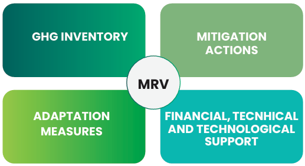
Figure 22 - Components of the MRV System in Angola
The national Monitoring, Reporting and Verification system will pave the way for a systematic update of Angola's national GHG emission inventory and for an efficient implementation of climate policy within the various sectors of the country's economy and society, thus contributing to the implementation of measures related to the NDC and reporting obligations of Angola under the UNFCCC. Furthermore, the insights gained from this process will assist national policymakers in the development of future actions for the reduction of emissions and enhancement of adaptative capabilities.
To this effect, Angolan authorities aimed at leveraging existing national resources so as to align current capabilities with MRV requirements as part of the country's international commitments. Therefore, at the heart of Angola's MRV system lies the institutional framework presented in chapter 5.1. The Climate Change Officer, under the supervision of the Minister of Environment, will be responsible for the general coordination of the system, starting with the development of major guidelines for the monitoring, reporting and verification exercises related to climate action within national territory, in close cooperation with the Technical Committee of the National Commission on Climate Change and Biodiversity.
This will culminate in a set of publicly available methodologies and baseline data which will be function as the starting point for the definition of methodological approaches suited for the evaluation GHG emission reductions, adaptation measures, and financial, technical and technological support originated from national and international sources. The guideline development will also extend to sustainable development co-benefits, where the work developed by the Climate Change Office and the Technical Committee of the National Commission on Climate Change and Biodiversity will provide a basis for the definition of coveted co-benefits derived from mitigation and adaptation actions and the methods for assessing their impact.
On a broader plane, the Climate Change Office and the Technical Committee of the National Commission on Climate Change and Biodiversity will simultaneously be responsible for the definition of data collection procedures and calculation modalities as part of the development of the National Greenhouse Gas Inventory. In order to ensure methodological integrity along the process, this effort will be supported by a newly created Statistics Working Group which will aggregate members both from the Ministry of Environment and other relevant Ministries (e.g. Ministry of Industry and Trade, Ministry of Mineral Resources, Petroleum and Gas, and Ministry of Energy and Water) with extensive experience in data collection and processing. This interministerial approach will also be relevant for future data collection, given that, under the MRV system, the responsibility of sectorial data collection will be attributed to each relevant Ministry in coordination with the Climate Change Office, under the guidance of the National Directorate for Climate Action and Sustainable Development.
The result of this methodological exercise will consist of a series of four subsystems - a GHG inventory subsystem, a mitigation measures subsystem, an adaptation measures subsystem, and a technical, technological and financial support subsystem - which will provide a contextspecific approach for each sphere of climate action in Angola. The collected data as part of these subsystems will be systematically aggregated in a digital database - the Knowledge Management System - which development will be the responsibility of the Climate Change Office. The same organ will be accountable for the general management of this database, as well as for the validation of the main results derived from each subsystem's MRV cycle (in conjunction with the Technical Committee of the National Commission on Climate Change and Biodiversity), and for the compilation and publication of these outcomes.
The success of Angola's MRV system will be dependent on two additional factors: the implementation of a quality control and quality assurance system, and the development of a capacity development plan. The former will be a central pillar for the soundness of the MRV system, particularly in components like the national GHG emission inventory, and shall be developed by the Climate Change Office in collaboration with the Technical Committee of the National Commission on Climate Change and Biodiversity and, if opportunity arises, with non-institutional stakeholders (such as Academia) which can provide solid contributions to the quality control and quality assurance national mechanisms. The latter will be a duty of the Technical Committee of the National Commission on Climate Change and Biodiversity, in accordance with both the newly implemented MRV system and the general orientation of climate action in Angola, an orientation which shall be defined by the Executive Committee of the National Commission on Climate Change and Biodiversity. The capacity development plan should focus on the training needs for the implementation of the MRV system, with the goal of training ministerial focal points, as well as focal points from regional governments and other public bodies. This capacitation will not only enhance technician's data collection skills but will also allow for a replication of these skills through knowledge sharing among technical bodies. If the Technical Committee deems it necessary, it shall consult the National Directorate for Environment and Climate Action and/or the Climate Change Office so as to better diagnose the capacity building needs of national authorities.
All the abovementioned duties and roles will be supported by clear mandates defined and formalized by a complementary legal framework which will encompass the national institutional apparatus, the modes of operation of these institutions, and will reflect the MRV cycle described in the present chapter. A general scheme can already be consulted in figure 23 below. Overall, it is expected that the proposed MRV system can achieve positive effects in the monitoring of the mitigation and adaptation components and in the improvement of domestic capacities to track financial, technical and technological flows received from international partners, therefore creating a favourable and stable environment for new partnerships and investors.
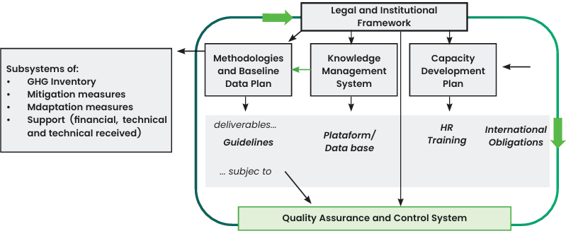
Figure 23 - Subsystems of the National MRV System
The MRV system which Angola intends to implement in the short-term, is embedded into already existing processes and structures, ensuring consistency between past experiences of climate action reporting and future activities related to this matter. The solidness of the system will be further assessed according to an annual evaluation of the MRV system (and its subsystems) by the Technical Committee of the National Commission on Climate Change and Biodiversity, with a view to continuously improving climate action efforts in the country.
On the mitigation component, the results of the evaluation of mitigation measures will be contrasted with the outcomes of the calculation process of the national GHG emissions inventory so as to guarantee consistency between the two subsystems. Progress on the adaptation component, on the other hand, will be measured through indicators related to the projects and actions listed in the NDC and international best practices. Examples of relevant indicators can be consulted in the table below.
| Area | Indicator |
|---|---|
| Climate Parameter | Change in annual temperature |
| Average monthly temperature | |
| Number of days above average temperature | |
| Changes in annual precipitation | |
| Average monthly precipitation | |
| Number of events of extreme rainfall | |
| Climate | Number of households impacted by drought |
| Total percentage of animals deceased as a consequence of drought | |
| Number of people exposed to a high heat stress | |
| Number of people that live in zones prone to floods | |
| Number of properties flooded per year | |
| Number of properties located in zones prone to floods | |
| Number of hectares of productive land lost due to soil erosion | |
| Total forest land affected by forest fires per year | |
| Number of disruptions in electricity supply derived from climate events | |
| Number of properties lost per year due to sea level rise | |
| GDP losses per year due to heavy rainfall | |
| Adaptation Actions | Number of sensibilization campaigns among the population regarding water efficiency per year |
| Number of public servants that received capacitation regarding climate change adaptation per year | |
| Level of integration of climate change adaptation in development planning | |
| Percentage of municipalities with local regulations regarding adaptation andassessments of vulnerability | |
| Existance of interministerial/intersectorial commissions that work on climate change adaptation | |
| Utilisation of early warning systems | |
| Percentage of coastline covered by zones of marine protection | |
| Number of financial mechanisms identified to support climate change adaptation actions |
It should be noted that national authorities will undergo efforts to integrate the role performed by the National Commission on Climate Change and Biodiversity in a broader architecture, encompassing not only the efforts towards the monitoring, reporting and verification of the Nationally Determined Contributions, but also the oversight cycles associated with the National Adaptation Plans and other documents derived from Angola's international commitments and under the supervision of the National Commission on Climate Change and Biodiversity, such as the case of National Biodiversity Strategy and Action Plan. This integration ensures efforts towards the attainment of each document's objectives do not occur in silos and guarantees an effective coordination of all parts involved in the monitoring, reporting and verification processes, avoiding an effort duplication, enhancing policy coherence, and maximizing sustainable development co-benefits associated with biodiversity and natural resources.
As mentioned in previous chapters of this NDC, Angola's economy is currently expanding, and the country is making considerable progress in improving the quality of life of its population and the stability of its socioeconomic structure. Nevertheless, Angola is still a developing country which faces a plethora of considerable challenges, challenges whose resolution absorb a substantial part of institutional efforts. This, in turn, increases domestic difficulties related to the allocation of financial, technological, and technical resources towards the decarbonization of key economic sectors and the improvement of climate adaptation and resilience across Angolan society.
Due to these circumstances, Angola recognizes that, in order to advance a significant part of the projects listed in this NDC and attain some of its goals related both to the mitigation and adaptation components, a certain degree of support will be needed. The country is committed to establishing the necessary institutional arrangements and policy measures to achieve, as well as to ensuring that the required domestic partnerships are duly in place. At the same time, to fully implement the listed projects, international assistance will be indispensable, particularly when it comes to the mobilization of finance, support in capacity building, and transfer of technological solutions.
Angola has deemed as essential to integrate greenhouse gas emissions mitigation and adaptation to the effects of climate change in its sectoral policy tools, particularly in instruments of territorial planning. This desire to include climate action in broader policy areas has a long track record within the national context: both the National Strategy for Climate Change and the previously submitted NDC have already expressed this objective and identified areas where this approach could be applied.
Some of these barriers can be overcome with the appropriate institutional arrangements and strategic partnerships defined in chapter 5, but a significant number of obstacles remain regarding the domestic abilities to mobilize resources and acquire technical knowledge and a technological maturity able to advance efforts towards the achievement of Angola's climate targets. To this effect, Angola diagnosed the main requirements the country needs in terms of international support, dividing them in two categories - capacity building and technology needs and financing needs and identified possible funding options to fill these gaps. Both the requirements and these funding options are listed and further explained in the following chapters.
Under the Paris Agreement, developed countries committed not only to providing climate finance, but also to supporting developing countries through technology transfer and capacity building. For many developing nations, including Angola, strengthening institutional and technical capacities is essential in order to effectively track climate finance flows - both bilateral and multilateral identify gaps, and ensure that available resources are implemented in a timely, efficient, and transparent manner.
Angola recognizes that capacity building and technology transfer are critical pillars of international support in addressing climate change and reducing national vulnerabilities. To this end, the country has conducted a thorough evaluation of its immediate capacity and technological requirements with respect to both mitigation and adaptation. This assessment is part of Angola's broader climate policy framework and is reflected in its National Strategy for Climate Change. This strategy outlines the capacity requirements necessary for the successful implementation of each mitigation and adaptation measure.
Angola has identified several specific national requirements that are essential for enhancing its capacity to mitigate and adapt to climate change. These needs reflect institutional and technical shortcomings that must be addressed to ensure the effective implementation of climate-related policies and actions. Key priorities include:
In this context, the Government of Angola is planning a set of cross-cutting actions aimed at strengthening the national response to climate change, encouraging private sector engagement, and raising public awareness. Key initiatives include: information sessions for investors on the regulatory framework for renewable energy; public awareness campaigns on energy efficiency, proper vehicle maintenance, the use of public transport, waste management, and the health impacts of climate change. The government also plans to enhance climate modelling capacity in the agricultural sector and to develop early warning systems to support communities and improve emergency and contingency response mechanisms (Figure 24).
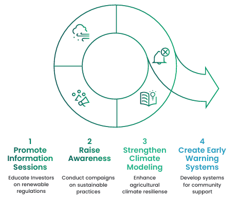
Figure 24 - Key Actions to Strengthen Angola's Climate Response
In addition, the government is prioritising two further areas: institutional capacity development and integrating climate change education into the school and university curricula. Acknowledging the pivotal role of education in effective climate action, Angola is dedicated to bolstering the necessary skills, knowledge, and institutional frameworks for fostering long-term resilience (Figure 25).
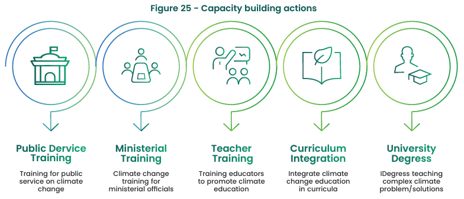
Figure 25 - Capacity building actions
An initial assessment of Angola's climate finance requirements has revealed the scale of investment needed to meet its NDC targets. Although these estimates are currently based on available data, they will be refined as more evidence-based information becomes available during the implementation process.
The total estimated cost of implementing the identified mitigation measures in Angola by 2035 is around 412 billion US dollars, while the estimated cost of adaptation efforts is 235 million US dollars.
These figures represent a total financing need of around 412 billion US dollars across all sectors, with mitigation accounting for 99.9 % of the overall budget and adaptation accounting for just 0.06 %.
Table 13 estimated financing needs for mitigation and adaptation summarises these financial requirements for mitigation and adaptation.
| Contribution | Unconditional (Million USD) | Conditional (Million USD) | Total (Million USD) | Total (%) |
|---|---|---|---|---|
| Mitigation 2025-2035 | 48.059,00 | 364.900,38 | 412 059,38 | 99,9% |
| Energy | 7.433,30 | 362.753,68 | 370.186,98 | 89,8% |
| LULUCF | 1.254,70 | 2.146,70 | 2.501,40 | 0,8% |
| Industry | 39.360,00 | - | 39.360,00 | 9,5% |
| Waste | 11,00 | - | 11,00 | 0,0% |
| Adaptation 2025-2035 | 112,15 | 122,83 | 234,98 | 0.06% |
| Agriculture and Fisheries | 45,20 | 55,38 | 100,58 | 0,02% |
| Coastal Zone | 5,00 | 18,00 | 23,00 | 0,01% |
| Forest, Ecosystem and Biodiversity | 10,30 | 8,10 | 18,40 | 0,00% |
| Water Resources | 17,83 | 25,85 | 43,68 | 0,01% |
| HumanHealth | 13,82 | 7,5 | 21,32 | 0,01% |
| Infrastructure | 20,00 | 8,00 | 28,00 | 0,01% |
| Total | 48.171,15 | 364.123,21 | 412.294,36 | 100% |
The lack of financial resources remains the primary obstacle to developing and implementing effective climate action in Angola. This hinders the implementation of mitigation and adaptation initiatives and limits national efforts in terms of research and development, as well as human and institutional capacity building.
In this context, mobilising climate finance is essential for implementing Angola's NDC. Adequate and sustained financial support, particularly through international cooperation, climate funds and private sector involvement, is essential to boost the country's climate resilience and low-carbon development pathways.
While Angola's unconditional contributions for the mitigation and adaptation components are expected to be achieved solely on the basis of domestic resources, the projects associated with the conditional contributions are highly dependent on international support through financial, technical and technological transfers from partner countries and multilateral institutions.
This financial support is expected to result from funds and financial entities, some of which are listed in the next chapter, and form bilateral agreements resulting from Article 9 of the Paris Agreement, which stipulates that developed country Parties shall provide financial resources to assist developing countries in developing their mitigation and adaptation efforts. As of now, negotiations regarding the modalities of Article 9 operationalization are still underway.
To implement these projects, Angola intends to use financial mechanisms associated with climate finance and market mechanisms derived from international agreements regarding cooperation between countries towards the achievement of global climate action commitments. This last category includes the use of international carbon markets, both the Article 6 mechanisms and the voluntary carbon market. These are instruments in which the country can leverage opportunities to advance the technical and technological maturity of domestic projects through the use of its past experiences related to the Clean Development Mechanism and other market mechanisms.
Article 6 of the Paris Agreement is of the uppermost importance in this context: it allows Parties to voluntarily cooperate in the implementation of their NDCs through market and non-market-based mechanisms, with some recent positive experiences in projects developed under the guidance of Article 6.2 attesting the potential of international cooperation approaches for countries in the same situation as Angola.
Recognising the additional mitigation potential of initiatives funded by international private sector actors, which may fall outside the scope of the unconditional and conditional targets listed here, project developers are encouraged to develop these activities under standards accredited to the IC-VCM, an independent governance body.
Angola's modalities of climate finance deployment have historically been based on a blend of international financial support and domestic mobilization of financial resources from private and public funds. This mobilization has been consistent with the necessities associated with typologies of projects implemented and executed since the ratification of the UNFCCC in 2000, and has been able to align the country with previous commitments reached under the advent of the Kyoto Protocol.
However, the entry into force of the Paris Agreement brought a new level of ambition which the country is unable to meet with its current financial resources. This gap was further enlarged due to slowdown in economic growth that Angola has been experiencing during the past years, due to decreases in productivity observed in the oil sector which led to fractures in stability of the national economy and budgetary constraints, impairing the allocation of resources for climate action from both the private and public sectors.
Due to these circumstances, access to international financial flows is exceptionally important to drive the efforts projected for the period between 2025 and 2035. In this context, and as described in the previous NDC, Angola's graduation from Least Developed Country (LDC) - despite reflecting a positive economic and social development - incurs in disadvantages in terms of access to climate finance destined to LDCs, namely:
In light of this, the remaining parts of this chapter list the financial instruments which are available to Angola and which the country intends to use in order to achieve its climate commitments. National Climate Finance
Despite the aforementioned constraints, Angola has at its disposal a relatively small number of options for the financial support of its mitigation and adaptation actions. This results from the major domestic instrument for the conservation and management of the environment - the National Environment Fund - and from other smaller financing lines that are exclusively maintained by the state budget, such as the National Electricity Fund and the Support Fund for Agricultural Development in Angola. Despite this, national funds and instruments are still below what is needed to implement the projects established in this NDC, and greater financial availability is necessary to cover all key sectors in terms of emissions reduction and adaptation to the effects of climate change.
Each of the domestic financing lines are described in detail in Table 14 below.
| National Environment Fund (FNA) | |
|---|---|
| Description | The FNA was created in January 2011 and is administratively supervised by the Ministerial Department responsible for the Environment. Its objectives are: Financially support the management, promotion and conservation of the environment; Contribute to the promotion of activities related to the rational management of environmental protection areas, rehabilitation or recovery of degraded areas; Support technical and scientific activities for the introduction of clean technologies; Support the activity of civil society. |
| Financing sources | Budget appropriations; Percentage of the values of environmental licensing fees; Percentage of fines applied; Proceeds from the sale of the seal or certificate of clean technologies; Values from pollutant emission rates; Compensation and compensation. |
| National Electricity Fund (FUNEL) | |
| Description | FUNEL intends to support the fulfilment of the Angola Energia 2025 vision by supporting rural electrification programs. The fund's allocations, rules and management will be carried out by the National Institute of Rural Electrification (INER). Its objectives are: Support renewable energy projects connected to the grid; Finance or subsidize rural electrification; Support the distribution of improved solar lanterns and ovens, manufactured in Angola; The performance of CDM procedures reverting their benefits to the financing of rural electrification. |
| Financing sources | State financing via concessions; Articulation with the Sovereign Fund of Angola (FSDEA), which will seek to take a minority stake in larger projects; Collaboration with local banks for credit lines; Cooperation with international entities to maximize obtaining non-repayable financing. |
| Support Fund for Agricultural Development in Angola (FADA) | |
| Description | Created under Executive Decree no. 40/87, FADA was reactivated in October 2016, under the supervision of the Ministry of Finance, as a 'specialized financial institution' designed to support the country's agricultural development policy. According to government data, the agriculture sector adds more than 80% of the country's labour force and represents less than 10% of the national GDP. The fund is intended to be an instrument to boost agriculture, one of the priority sectors for the diversification of the national economy. The Government intends to develop the sector by promoting the local, regional and national economy and being a driving force for compliance with SDG 2: Eradicate hunger, achieve food security, improve nutrition and promote sustainable agriculture. |
| Financing sources | Tax revenue associated with the import of agricultural products; State budget |
| Angola Sovereign Fund (FSDEA) | |
| Description | On November 20, 2008, the President of Angola, José Eduardo dos Santos, announced the establishment of a special commission to create the basis for a new Sovereign Wealth Fund (FSR) in order to promote growth, prosperity and socio-economic development in Angola. In 2011, the Fund was legally ratified and officially established as the Angola Sovereign Fund in 2012, with an initial allocation of US $ 5 billion. Its objective is to promote the social and economic development of Angola, generating wealth for the Angolan people. |
| Financing sources | FSDEA is capitalized with revenues from oil exports and an important part of its investments are allocated to national energy conversion. FSDEA has already allocated $ 1.1 billion to a venture capital fund for the infrastructure sector with capital-intensive investments in the energy, transport and industry sectors. In terms of agriculture, FSDEA has allocated $ 250 million. FSDEA expects that its investments in the agricultural sector will contribute decisively to economic growth in Angola and other regions of the continent by increasing the revenues from this activity. |
In addition to the above stated domestic financial lines, Angolan authorities will leverage opportunities to expand national climate finance availability, particularly through joint efforts directed to blended climate finance instruments - financial instruments which conjugate public and private funding sources. Through this approach, national authorities will explore strategies related to de-risking, concessional loans and other instruments that may increase attractiveness to private national and international investors and direct them to mitigation and adaptation projects.
Furthermore, national representatives will simultaneously try to diversify their climate finance streams by exploring the feasibility of less common (but increasingly more popular approaches) such as nature bonds, debt-for-nature swaps, and project finance for permanence in the Angolan context, so as to increase the funding options of the mitigation and adaptation initiatives present in this NDC, as well as other initiatives that might be proposed or implemented in the future.
International climate finance is an indispensable pre-requisite to materialize the latent potential of Angola's climate action. In the past, the country has benefited from funding and programs instituted by institutions such as the International Fund for Agricultural Development (IFAD), the
European Development Fund (EDF), the French Fund for the World Environment (FFEM), the Deutsche Gesellschaft für Internationale Zusammenarbeit (GIZ), the United Nations Development Program and the United Nations Environment Program (UNEP, or in English UNEP - United Nations Environment Program).
Similarly, Angola has taken advantage from the Fast-Start financing program that was agreed upon at COP15, a program which encouraged developed countries to channel an approximate amount of 30 billion US $ until 2012 in order to support climate action efforts originated in developing countries.
Currently, a significant degree of financial aid is needed to implement the projects listed in this NDC. To this effect, Angolan representatives have identified the major financing lines that can support the country in its mitigation and adaptation objectives, which can be analysed in Table 15.
Table 15 - International financing instruments for mitigation and adaptation
The Least Developed Countries Fund was established by the COP to support Least Developed Countries in developing and implementing adaptation actions included in their National Adaptation Programmes of Action (NAPAs). The Fund is currently operated by the Global Environment Facility and Angola has a track record related to the utilization of the finance lines provided by this fund.
The GEF Trust Fund, operated by the Global Environment Facility, was instituted with the objective of helping developing countries in transitioning to an economy model based on sustainable development and a low level of greenhouse gas emissions, thus contributing to the objective of the UNFCCC and Paris Agreement. The Fund is specifically designed to help countries implement environmental measures which surpass a business as usual scenario.
By the end of 2016, 2 projects in Angola (1 for mitigation and 1 for adaptation) with a total grant amount exceeding US$ 7 million were under the umbrella of the GEF Trust Fund.
The Green Climate Fund (GCF), a global fund established in 2010 under the UN Framework Convention on Climate Change (UNFCCC) to support developing countries in reducing greenhouse gas emissions and adapting to climate change, is widely considered the world's largest fund dedicated solely to climate action. The GCF aims at promoting low-emission, climateresilient transition pathways through an allocation of financial resources for projects and programs.
As of 2025, the GCF has supported 314 initiatives related to renewable energy, climate-resilient infrastructure, and sustainable agriculture, totalizing 18 billion USD in financial fluxes. Furthermore, the GCF has supported a total of 133 developing nations, ensuring inclusive and equitable climate action.
Angola only had one project under the now dissolved Clean Development Mechanism: the Gove hydroelectric power station, which was registered in 2014 with a reduction potential of 126,118 tCO 2 e / year. However, by the end of 2016 the project had not issued any certified emission reduction (CER).
With new carbon market instruments being implemented as part of international negotiations, namely those derived from Article 6 of the Paris Agreement, as well as activities certified under independent standards, Angola intends to activate the potential inherent to the application of carbon market dynamics in its national context.
The Adaptation Fund has the goal of supporting adaptation action in developing countries exceptionally susceptible to the effects of climate change, through the allocation of financial resources to deploy concrete projects.
Initially implemented as part of the Kyoto Protocol, the Adaptation Fund has proceeded to its next phase under the Paris Agreement and is now linked to the proceeds generated by transactions under the Agreement's Article 6.4.
Carbon markets have long been part of international efforts towards the reduction of global greenhouse gas emissions. If initially, under Article 12 of the Kyoto Protocol, the main goal of the previous instrument (the Clean Development Mechanism) was to support developed countries in achieving their emission reduction objectives through the financing of emission reduction projects, with the Paris Agreement slight changes were implemented so as to promote a more dynamic global market.
Article 6 of the Paris Agreement and its subsequent modalities of application initiated a new wave of global carbon market mechanisms, based on an openness to every signatory Party and not only a specific segment of the countries which are trying to reduce their greenhouse gas emissions. The Article includes several approaches to international cooperation - some centralized in a similar fashion to the previous Clean Development Mechanism, while others are based on a bilateral, decentralized approach. This offers a series of potential benefits to countries where the emission reduction potential is relatively high, but the domestic technological, technical and financial abilities are unable to meet the exigencies demanded by such actions.
Angola has recognized the potential of the new carbon market mechanisms and is currently developing its national abilities, legal framework and institutional arrangements to receive projects under Article 6 of the Paris Agreement or developed under independent standards.
Additional details are expected in the near future.
Climate change is one of the major challenges Angola has to face in the coming decades, but a climate transition based on its mitigation and adaptation components would be insufficient if it could not promote a sustainable development of the country and ensure a just transition for each social group in Angola. In light of the differentiated impacts that Angola's social and non-social groups have to face, national authorities have identified three main areas of action for the planning and future implementation activities related to the reduction of greenhouse gas emissions of the Angolan economy and the enhancement of adaptative capabilities within the country.
Climate Change has the potential to impact all segments of society, with dire implications for social stability and economic growth. However, IPCC's 6th Assessment Report recognises that impacts do not affect everyone in a similar manner, and some particular groups are more likely to feel the consequences of extreme weather events and gradual changes in climatic variables than others. Women are among the later category, with climate change impacting disproportionately their health, subsistence and general livelihood. A gender dimension is present, for example, in disasterrelated mortality, where women face considerably higher rates than their male counterparts, particularly when their socioeconomic status is lower. Furthermore, research shows that women's life expectancy is more severely impacted by extreme weather events than men's, due to factors such as injuries resulting from these disasters or epidemics that follow them[32].
Women are also at risk in indirect ways. According to the IIMS 2023-2024, 43% of women aged 1549, currently married or in union, have decision-making power over their sexual and reproductive health, including decisions regarding sexual relations, contraceptive use, and access to health services. This proportion decreases to 26% in rural areas, compared to 55% in urban areas.[41].
The burden of domestic tasks and unpaid labour also falls disproportionately on women and girls. In rural areas, women are predominantly responsible for the collection of water for household consumption, often over long distances and in insecure conditions. Although the IIMS 2023-2024 does not quantify this task allocation directly, this reality is widely recognised in both national and global assessments of gender and climate vulnerability. This burden is further exacerbated by the fact that only 9.2% of rural households use clean cooking fuels, and just 7.3% have access to electricity, reinforcing both health and environmental vulnerabilities for women and girls [41].
The gender digital divide also persists. According to the IIMS 2023-2024, 33.7% of women reported having used the internet in the last 12 months, but this percentage falls dramatically in rural areas, where only 2.6% of women reported any internet use [41]. This limited digital access restricts opportunities for education, information sharing, and climate-related early warning alerts.
Gender-based violence remains a critical concern. The IIMS 2023-2024 indicates that 31% of women aged 15-49 who have had a partner have experienced psychological, physical, or sexual violence from an intimate partner in the past 12 months. Of these, 20% reported physical abuse and 7% reported sexual violence [41].
Attitudes towards domestic violence also reflect deeply rooted gender norms. According to the IIMS 2023-2024, 20% of women believe that a husband is justified in hitting or beating his wife under certain circumstances, with this belief being more prevalent in rural areas (27%) compared to urban settings (16%)[41].
These overlapping social and structural factors reduce the adaptive capacity of women and girls, particularly in rural areas where subsistence livelihoods depend heavily on natural resources. Prolonged droughts, heavy rainfall, and other extreme weather events directly impact their ability to secure food and water, threatening both their economic output and well-being.
Additionally, women are also more exposed to violence in the aftermath of climate-related disasters, especially violence of a sexual nature. As pointed out by the 2007 World Disasters Report, 'women and girls are at higher risk of sexual violence, sexual exploitation and abuse, trafficking, and domestic violence in disasters'. This, in turn, disincentives women from seeking refuge in shelters out of fear of domestic abuse, causing higher degrees of mortality and injury among them[34]. Despite the severity of the examples above, these are just some of the disproportional risks women have to face as a consequence of climate change effects; other impacts may be linked to migration, urban health, and negative consequences of poorly planned mitigation actions which do not take into account women's role in the social fabric.
Angola is aware of these differentiated risks, as evidenced by the 2022 Diagnosis on Gender Equality in Angola, where it is stated that 'women suffer disproportionately from poverty and are more vulnerable to the effects of an unstable climate that causes droughts or floods. Furthermore, it is important to emphasise that women play a fundamental role in fundamental role in mitigating the effects of climate change on family life'[35].
Due to this central role both in adaptation and mitigation planning, Angolan women are called to play an important part in the climate action efforts present in this Nationally Determined Contribution. While it is indisputable that women should take part in decision-making mechanisms, data has shown that there is an imbalance in gender representation inside these mechanisms, with women having fewer opportunities to act as agents of change and climate resilience. Therefore, and as part of Angola's process of developing the policies and projects present in this NDC, national authorities will reinforce the incentive instruments for women's participation, seeking to involve the female gender more in the strategic planning of the country's climate policy and including the specific visions and concerns of Angolan women.
At the same time, it is important to recognise that climate change also affects men and boys in distinct ways, according to their roles in society and the economy. For example, in some rural areas, boys may leave school for extended periods to migrate with livestock in search of pasture during droughts, exposing them to risks such as child labour or reduced educational opportunities. Men working in sectors such as fishing, mining, or construction may face increased occupational health hazards due to extreme heat, resource scarcity, or disasters. Considering these differentiated experiences ensures that climate action is both gender-responsive and fully inclusive[43].
In this regard, Angola's climate actions are aligned with the Sustainable Development Goals (SDGs), particularly SDG 5 on Gender Equality, to ensure that women and girls are not left behind in the transition to a low-carbon and climate-resilient economy. Angola also upholds the commitments of the Beijing Declaration and Platform for Action (1995), especially in the critical area of 'Women and the Environment', reinforcing the need for inclusive and gender-responsive climate governance[69].
Children and young people play a significant part in Angolan society: in 2019, around 32.4% of the 30.175.553 inhabitants are young people, of which around 59.4% (5.814.309 inhabitants) are concentrated in the 15-24 age bracket[36]. Furthermore, approximately 66.2% of the young population is concentrated in urban areas, mainly located in coastal areas, while 33.8% live in rural areas. This latter category is mainly associated with the agricultural professional activities, the most prominent occupation in the Angolan youth context.
Children in Angola are highly vulnerable to the impacts of climate change. According to the Children's Climate Risk Index, Angola ranks 10th globally in terms of "extremely high risk" for children, despite contributing only 0.8 per cent of global greenhouse gas emissions. This reflects a stark example of climate injustice[44]. Furthermore, Angola's Multidimensional Poverty Index shows that 74.4 per cent of children experience between three and seven deprivations simultaneously, with poverty being far more widespread among children under the age of 10. These conditions make children particularly susceptible to the health, education, and livelihood impacts of climate-related shocks[45].
Youth involvement in climate action is not only a priority line of action due to young population's activity in the national economy, but also due to the climate change impacts young people are subject to in the near future. Children and young people are disproportionately affected by climate change. They are more prone to dehydration and heat stress due to extreme temperatures and limited access to clean drinking water. They are also more vulnerable to diseases and malnutrition caused by climate change. The impacts of climate change, including hurricanes, floods, droughts and ecosystem degradation, directly threaten the health, education and overall well-being of our young population[42]. Children in Angola are exposed to multidimensional poverty, making them more vulnerable to the impact of climate change than those with access to basic services. Disadvantaged and marginalised groups of children and young people, such as orphans, street children and the children of migrants and refugees, are particularly vulnerable[68].
Children and young people are among the most vulnerable groups affected by climate change, yet they also represent a vital resource for driving transformative action. Decision-making processes should encompass inputs from the younger segment of Angolan population in order to include perspectives and opinions that otherwise would be neglected in the general processes of formulating policies and implementing projects.
Recognising this dual role of being both a vulnerable group and agents of change, Angola has already established participatory spaces where children and young people can express their views on climate challenges. In collaboration with schools, youth associations and local communities, workshops, focus groups and educational sessions have been developed to raise awareness of climate change and encourage engagement. These initiatives allow children and young people to share their experiences and concerns and contribute ideas on how to address environmental risks in their own contexts. Such participatory processes have also supported the development of the skills needed for active involvement in climate action while fostering intergenerational dialogue on sustainable development.
Therefore, Angolan authorities are invested in involving youth in the process of executing the projects mentioned in this Nationally Determined Contribution, not only in its planning phase but also in the subsequent application, monitoring and evaluation stages.
This intention of youth involvement in climate action aligns with the National Plan for Development (PND), the medium-term Development Plan for 2023-2027, and Angola 2050, the long-term development plan for Angola. It also supports the National Climate Change Strategy of Angola and the National Environmental Education Strategy, all of which recognize the vital role of Angola's youth as the driving forces behind the nation's future. In the particular case of the National Environmental Education Strategy, there are specific objectives related to providing youth with the necessary environmental education for sustainable development and developing training programs for educators and environmental professionals, as well as fostering partnerships between the government, NGOs, and the private sector to create a collaborative approach towards sustainable development
MINAMB is committed to advancing these intentions through key activities. These include mapping and organizing training initiatives, as well as supporting existing ones, to enhance knowledge on climate actions and challenges. Additionally, MINAMB aims to empower and connect youth with available instruments, such as platforms and initiatives, at both national and international levels. A crucial activity involves organizing locally focused youth and climate forums to decentralize initiatives and foster greater engagement from the provinces. By prioritizing these actions, national authorities ensure that young people are at the forefront of climate solutions, equipped with the knowledge and tools they need to make a meaningful impact.
Climate change impacts are not circumscribed to the social sphere: natural elements, particularly biodiversity, is highly exposed to climate fluctuations and extreme weather events, which can severely impair the stability of the ecosphere. IPPC's 6th Assessment Report states with a high level of confidence that adverse impacts in biodiversity resulting from human-caused climate change will continue to intensify in the future, with dire consequences for terrestrial, freshwater and ocean ecosystems.
As the world becomes warmer, the risk of extinction or irreversible loss in biodiversity increases severely. This, in turn, results in aggravated effects for populations whose livelihoods are highly dependent on ecosystem services and in access to specific natural resources. An example of these chain effects lays in the marine ecosystem susceptibility to extreme-weather conditions: the high probability of a future increase in the frequency of marine heatwaves will lead to higher risks of biodiversity loss in the oceans, related to mass mortality events, as assessed by the AR6. This, in turn, undermines the economic output of the fishing industry and the livelihoods of thousands of Angolans who depend on access to fish stocks not only to generate income, but also for subsistence reasons.
Angola has long been aware of the importance of biodiversity for its social and economic fabric, something which is reflected in the policy measures and strategic plans adopted by its authorities. Among these, the most relevant one is the National Strategy and Action Plan for Biodiversity 20192025 which sets specific actions for the diverse sectors of Angolan economy, including agriculture, industry, and the oil sector. Moreover, the plan as detailed measures focused on the promotion of the role women in Angolan society, thus intersecting with chapter 7.1. of this Nationally Determined Contribution[37].
Owing to the strategic importance of biodiversity in the national context, Angolan authorities are committed to applying a biodiversity lens on the planning phase and execution stage of the actions listed in the present NDC, with the objective of not only assuring the conservation of endemic fauna and flora, but also increasing the resilience of the terrestrial, freshwater and oceanic ecosystems in the country, therefore improving the chances of keeping the stability of ecosphere in face of the incoming adverse impacts of climate change.
| Project | Installed Power | State of implementation |
|---|---|---|
| Kuito | 11MW | In progress |
| Lucapa | 7,2MW | In progress |
| Baía Farta Solar Power Plant | 96,70MW | Finished |
| Biópio Solar Power Plant | 188,88MW | Finished |
| Lucapa Solar Power Plant | 7,192MW | In progress |
| Luena Solar Power Plant | 26,9MW | In progress |
| Saurimo Solar Power Plant | 26,906MW | In progress |
| Cuíto Solar Power Plant | 14,52MW | In progress |
| Bailundo Solar Power Plant | 7,992MW | In progress |
| 60 Locations Project | 295,88 MW+719,03MWh batteries | In progress |
| Luanda Solar Power Plant | 104MW | Approved / Starting |
| Laúca Solar Power Plant | 400MW | Approved / Starting |
| 65 Mini-Grid Project | 220 MW+287,04 MWh batteries | Approved |
| Cabinda Solar Power Plant | 90 MW+25 MWh batteries | Approved |
| Bailundo | 7,9MW | In progress |
| Luena | 26,9MW | In progress |
| Saurimo | 26,9MW | In progress |
| Caraculo | 25 + 25MW | Approved / Starting |
| Quilemba | 35 + 45MW | Approved |
|
| SECTOR | SUB-SECTOR | CATEGORY | DESCRIPTION |
|---|---|---|---|
| Energy | Fuel utilisation activities | Energy Industries | Electricity generation. |
| Transport | Civil aviation, rail, sea and road transport. | ||
| Fugitive emissions from fuels | Oil and Natural Gas | Natural Gas | |
| Oil | |||
| Flaring | |||
| Venting | |||
| Emissions from wood and charcoal consumption | Residential | Cooking | |
| Emissions from charcoal plants | Energy Industries | Charcoal Production |
| SECTOR | SUB-SECTOR | CATEGORY | DESCRIPTION |
|---|---|---|---|
| Industrial processes and product use | Mineral | Cement production | Cement production. |
| Lime production | Production of Dolomitic Limestone and Virgin Lime. | ||
| Glass production | Glass production | ||
| Ceramic production | Brick and tile production. | ||
| Metal Industry | Production of Iron and Steel Alloys | Production of Iron and Steel Alloys |
| SECTOR | SUB-SECTOR | CATEGORY | DESCRIPTION |
|---|---|---|---|
| Agriculture | Aggregate sources and sources of non- CO 2 gases on earth | Liming | Applying lime to agricultural soil |
| Rice cultivation | CH emissions4 from rice production in general (Irrigated and Upland/sequel). | ||
| N 2 O emissions from soil management | Includes direct and indirect emissions of N 2 O in managed soils. E.g. fertiliser application. Organic fertilisers (from agricultural and animal waste), which have not been inventoried, and inorganic fertilisers, which are fertilisers obtained from mineral extraction or oil refining), synthetic fertilisers (compound fertilisers (NPK, ammonium sulphate and urea), simple fertilisers (sulphate, carbonate and chloride), limestone (used to correct the soil) 11 . | ||
| GHG emissions from burning biomass in agricultural crops 12 | At a national level, the main crops that involve burning waste are sugar cane and herbaceous cotton. As these crops are not significant in Angola, emissions from burning agricultural waste will not be considered in this inventory. | ||
| Flock | Enteric fermentation | CH emissions4 from enteric fermentation in cattle, sheep, goats, horses, donkeys, pigs and poultry. | |
| Handling animal manure | Emissions of CH 4 and N 2 O in the management of livestock manure Bovine/beef; Ovine/sheep; Equine/ horses; Caprine/goats; Asinine/mules; Swine/pigs; and Poultry/poultry. |
| SECTOR | SUB-SECTOR | CATEGORY | DESCRIPTION |
|---|---|---|---|
| Waste and | Solid waste disposal | Waste disposal on unmanaged sites | Dumps |
| Waste disposal on managed sites | Landfill sites | ||
| Incineration and open burning of waste | Incineration of waste | Incineration of waste | |
| Wastewater treatment and disposal | Treatment and disposal of domestic wastewater | Treatment and disposal of domestic wastewater | |
| wastewaters | Wastewater treatment and disposal | Treatment and disposal of industrial wastewaters | Treatment and disposal of industrial wastewaters |
| Biological treatment of solid waste | Production of organic waste compost | NE- Not estimated. Emissions of CH 4 and N 2 O in this section were not estimated due to difficulties in obtaining significant data from the country on the biological treatment of waste, composting and flaring of gas generated in landfills. |
11 Note: Only synthetic fertilisers (used in EAF) have been inventoried by IDAR.
12 Categories not included in Angola's 2010/2019 GHG inventory
| Indicators to track NDCimplementation | |||||||||
|---|---|---|---|---|---|---|---|---|---|
| Indicator | 2020 | 2025 | 2030 | 2031 | 2032 | 2033 | 2034 | 2035 | |
| General | |||||||||
| Population (million) | |||||||||
| GDP(million USD) | |||||||||
| GHGEmissions | |||||||||
| BAUGHG emissions (MtCO2e) | Energy | ||||||||
| Waste | |||||||||
| LULUCF | |||||||||
| Industry | |||||||||
| TOTAL | |||||||||
| CurrentGHG emissions (MtCO2e) | Energy | ||||||||
| Waste | |||||||||
| LULUCF | |||||||||
| Industry | |||||||||
| TOTAL | |||||||||
| Mitigation throughNDC measures (MtCO2e) | Unconditional | ||||||||
| Conditional | |||||||||
| TOTAL | |||||||||
| Mitigation of NDCmeasures (% change compared to BAU) | Unconditional | ||||||||
| Conditional | |||||||||
| TOTAL | |||||||||
| Finance | |||||||||
| Internal | TOTAL | ||||||||
| External | TOTAL | ||||||||